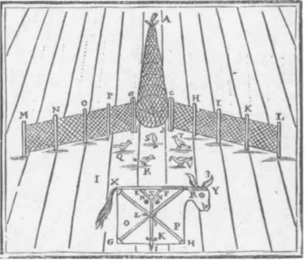

PROPOSITION X. The State and its poles.
Let us return to Dumezil’s theses: (1) Political sovereignty has two poles, the fearsome magician-emperor, operating by capture, bonds, knots, and nets, and the jurist-priest-king, proceeding by treaties, pacts, contracts (the couples Varuna-Mitra, Odin-Tyr, Wotan-Tiwaz, Uranus-Zeus, Romulus-Numa …); (2) the war function is exterior to political sovereignty and is equally distinct from both its poles (Indra or Thor or Tullus Hostilius…).’ 1. The State apparatus is thus animated by a curious rhythm, which is first of all a great mystery: that of the Binder-Gods or magic emperors, One-Eyed men emitting from their single eye signs that capture, tie knots at a distance. The jurist-kings, on the other hand, are One-Armed men who raise their single arm as an element of right and technology, the law and the tool. In the succession of men of State, look always for the One-Eyed and the One-Armed, Horatius Codes and Mucius Scaevola (de Gaulle and Pompidou?). This is not to say that one has exclusive right to signs, the other to tools. The fearsome emperor is already the master of large-scale works; the wise king takes up and transforms the entire regime of signs. What it means is that the combination, signs-tools, constitutes the differential trait of political sovereignty, or the complementarity of the State.2
Of course, the two men of State are always getting mixed up in affairs of war. But either the magic emperor sends to battle warriors who are not his own, whom he takes into his service by capture; or, more important, when he makes his appearance on the battlefield, he suspends the use of weapons, he throws his net over the warriors, his single eye throws them into petrified catatonia, “he binds without combat,” he encasts the war machine (this State capture is not to be confused with the captures of war: conquests, prisoners, spoils).3 As for the other pole, the jurist-king is a great organizer of war; but he gives it laws, lays out a field for it, makes it principled, imposes a discipline upon it, subordinates it to political ends. He turns the war machine into a military institution, he appropriates the war machine for the State apparatus.4 We should not be too hasty in speaking of a softening, a humanization: on the contrary, this is perhaps when the war machine has only one remaining object, that of war itself. Violence is found everywhere, but under different regimes and economies. The violence of the magic emperor: his knot, his net, his way of “making his moves once and for all” … The violence of the jurist-king: his way of beginning over again every move, always with attention to ends, alliances, and laws… All things considered, the violence of the war machine might appear softer and more supple than that of the State apparatus because it does not yet have war as its “object,” because it eludes both poles of the State. That is why the man of war, in his exteriority, is always protesting the alliances and pacts of the jurist-king, as well as severing the bonds of the magic emperor. He is equally an unbinder and a betrayer: twice the traitor.5 He has another economy, another cruelty, but also another justice, another pity. To the signs and tools of the State, the man of war opposes his weapons and jewelry. Once again, who could say which is better and which is worse? It is true that war kills, and hideously mutilates. But it is especially true after the State has appropriated the war machine. Above all, the State apparatus makes the mutilation, and even death, come first. It needs them preaccom-plished, for people to be born that way, crippled and zombielike. The myth of the zombie, of the living dead, is a work myth and not a war myth. Mutilation is a consequence of war, but it is a necessary condition, a presupposition of the State apparatus and the organization of work (hence the native infirmity not only of the worker but also of the man of State himself, whether of the One-Eyed or the One-Armed type): “The brutal exhibition of severed flesh shocked me…. Wasn’t it an integral part of technical perfection and the intoxication of it… ? Mankind has waged wars since the world began, but I can’t remember one single example in the Iliad where the loss of an arm or a leg is reported. Mythology reserved mutilation for monsters, for human beasts of the race of Tantalus or Procrustes…. It is an optical illusion to attribute these mutilations to accidents. Actually, accidents are the result of mutilations that took place long ago in the embryo of our world; and the increase in amputations is one of the symptoms bearing witness to the triumph of the morality of the scalpel. The loss occurred long before it was visibly taken into account.”6 The State apparatus needs, at its summit as at its base, predisabled people, preexisting amputees, the stillborn, the congenitally infirm, the one-eyed and one-armed.
Thus there is a tempting three-part hypothesis: the war machine is “between” the two poles of political sovereignty and assures the passage from one pole to the other. It is indeed in that order, 1-2-3, that things seem to present themselves in myth and history. Take two versions of the One-Eyed and the One-Armed gods analyzed by Dumezil: (1) the god Odin, who has a single eye, ties up the wolf of war and holds him in his magic bond; (2) but the wolf is wary and has at its disposal all its power of exteriority; (3) the god Tyr gives the wolf a legal security by leaving one of his hands in the wolfs mouth so the wolf can bite it off if it does not succeed in extricating itself from the bond. (1) Horatius Codes, the One-Eyed, using only his face, his grimace and magic power, prevents the Etruscan commander from attacking Rome; (2) the war commander then decides to lay siege; (3) Mucius Scaevola takes a political tack, offering his hand as a security in order to persuade the warrior that it would be best to abandon the siege and conclude a pact.
In an entirely different, historical, context, Marcel Detienne suggests an analogous schema in three moments for ancient Greece: (1) The magic sovereign, the “Master of Truth,” has at his disposal a war machine that doubtless does not originate with him, and which enjoys a relative autonomy within his empire; (2) this class of warriors has its own rules, defined by “isonomy,” an isotropic space, and a “milieu” (war spoils are in the middle [au milieu], he who speaks places himself in the middle of the assembly); this is another space, the rules are different from those of the sovereign, who captures and speaks from on high; (3) the hoplite reform, the groundwork for which was laid in the warrior class, spread throughout the social body, promoting the formation of an army of citizen-soldiers; at the same time, the last vestiges of the imperial pole of sovereignty were replaced by the juridical pole of the city-state (with isonomy as its law, and isotropy as its space).7 Thus in every case, the war machine seems to intervene “between” the two poles of the State apparatus, assuring and necessitating the passage from one to the other. We cannot, however, assign this schema a causal meaning (the authors cited do not do so). In the first place, the war machine explains nothing; for it is either exterior to the State, and directed against it; or else it already belongs to the State, encasted and appropriated, and presupposes it. If the war machine has a part in the evolution of the State, it is therefore necessarily in conjunction with other internal factors. And this is the second point: if there is an evolution of the State, the second pole, the evolved pole, must be in resonance with the first, it must continually recharge it in some way, and the State must have only one milieu of interiority; in other words, it must have a unity of composition, in spite of all the differences in organization and development among States. It is even necessary for each State to have both poles, as the essential moments of its existence, even though the organization of the two varies. Third, if we call this interior essence or this unity of the State “capture,” we must say that the words “magic capture” describe the situation well because it always appears as preaccomplished and self-presupposing; but how is this capture to be explained then, if it leads back to no distinct assignable cause? That is why theses on the origin of the State are always tautological. At times, exogenous factors, tied to war and the war machine, are invoked; at times endogenous factors, thought to engender private property, money, etc.; and at times specific factors, thought to determine the formation of “public functions.” All three of these theses are found in Engels, in relation to a conception of the diversity of the roads to Domination. But they beg the question. War produces the State only if at least one of the two parts is a preexistent State; and the organization of war is a State factor only if that organization is a part of the State. Either the State has no war machine (and has policemen and jailers before having soldiers), or else it has one, but in the form of a military institution or public function.8 Similarly, private property presupposes State public property, it slips through its net; and money presupposes taxation. It is even more difficult to see how public functions could have existed before the State they imply. We are always brought back to the idea of a State that comes into the world fully formed and rises up in a single stroke, the unconditioned Urstaat.
PROPOSITION XI. Which comes first?
We shall call the first pole of capture imperial or despotic. It corresponds to Marx’s Asiatic formation. Archaeology discovers it everywhere, often lost in oblivion, at the horizon of all systems or States — not only in Asia, but also in Africa, America, Greece, Rome. Immemorial Urstaat, dating as far back as Neolithic times, and perhaps farther still. Following the Marxist description: a State apparatus is erected upon the primitive agricultural communities, which already have lineal-territorial codes; but it overcodes them, submitting them to the power of a despotic emperor, the sole and transcendent public-property owner, the master of the surplus or the stock, the organizer of large-scale works (surplus labor), the source of public functions and bureaucracy. This is the paradigm of the bond, the knot. Such is the regime of signs of the State: overcoding, or the Signifier. It is a system of machinic enslavement: the first “megamachine” in the strict sense, to use Mumford’s term. A prodigious success in a single stroke; other States will be mere runts measured against this model. The emperor-despot is not a king or a tyrant; these will come into existence only as a function of private property once it has arisen.9 In the imperial regime, everything is public: ownership of land is communal, each individual is an owner only insofar as he or she is a member of the community; the eminent property of the despot is that of the supposed Unity of the communities; and the functionaries themselves have land only if it comes with their position (although the position may be hereditary). Money may exist, notably in the form of the tax that the functionaries owe the emperor, but it is not used for buying-selling, since land does not exist as an alienable commodity. This is the regime of the nexum, the bond: something is lent or even given without a transfer of ownership, without private appropriation, and the compensation for it does not come in the form of interest or profit for the donor but rather as a “rent” that accrues to him, accompanying the lending of something for another’s use or the granting of revenue.10
Marx, the historian, and Childe, the archaeologist, are in agreement on the following point: the archaic imperial State, which steps in to overcode agricultural communities, presupposes at least a certain level of development of these communities’ productive forces since there must be a potential surplus capable of constituting a State stock, of supporting a specialized handicrafts class (metallurgy), and of progressively giving rise to public functions. That is why Marx links the archaic State to a certain “mode of production.” However, the origin of these Neolithic States is still being pushed back in time. What is at issue when the existence of near-Paleolithic empires is conjectured is not simply the quantity of time; the qualitative problem changes. Catal Hiiyiik, in Anatolia, makes possible a singularly reinforced imperial paradigm: it is a stock of uncultivated seeds and relatively tame animals from different territories that performs, and makes it possible to perform, at first by chance, hybridizations and selections from which agriculture and small-scale animal raising arise.11 It is easy to see the significance of this change in the givens of the problem. It is no longer the stock that presupposes a potential surplus, but the other way around. It is no longer the State that presupposes advanced agricultural communities and developed forces of production. On the contrary, the State is established directly in a milieu of hunter-gatherers having no prior agriculture or metallurgy, and it is the State that creates agriculture, animal raising, and metallurgy; it does so first on its own soil, then imposes them upon the surrounding world. It is not the country that progressively creates the town but the town that creates the country. It is not the State that presupposes a mode of production; quite the opposite, it is the State that makes production a “mode.” The last reasons for presuming a progressive development are invalidated. Like seeds in a sack: It all begins with a chance intermixing. The “state and urban revolution” may be Paleolithic, not Neolithic as Childe believed.
Evolutionism has been challenged in many different ways (zigzag movements, stages skipped here or there, irreducible overall breaks). We have seen in particular how Pierre Clastres tried to shatter the evolutionist framework by means of the following two theses: (1) societies termed primitive are not societies without a State, in the sense that they failed to reach a certain stage, but are counter-State societies organizing mechanisms that ward off the State-form, which make its crystallization impossible; (2) when the State arises, it is in the form of an irreducible break, since it is not the result of a progressive development of the forces of production (even the “Neolithic revolution” cannot be defined in terms of an economic infrastructure).12 However, one does not depart from evolutionism by establishing a clean break. In the final state of his work, Clastres maintained the preexistence and autarky of counter-State societies, and attributed their workings to an overmysterious presentiment of what they warded off and did not yet exist. More generally, one marvels at the bizarre indifference that ethnology manifests for archaeology. It seems as though ethnologists, fenced off in their respective territories, are willing to compare their territories in an abstract, or structural, way, if it comes to that, but refuse to set them against archaeological territories that would compromise their autarky. They take snapshots of their primitives but rule out in advance the coexistence and superposition of the two maps, the ethnographical and the archaeological. Catal Hiiyuk, however, would have had a zone of influence extending two thousand miles; how can the ever-recurring problem of the relation of coexistence between primitive
societies and empires, even those of Paleolithic times, be left unattended to? As long as archaeology is passed over, the question of the relation between ethnology and history is reduced to an idealist confrontation, and fails to wrest itself from the absurd theme of society without history, or society against history. Everything is not of the State precisely because there have been States always and everywhere. Not only does writing presuppose the State, but so do speech and language. The self-sufficiency, autarky, independence, preexistence of primitive communities, is an ethnological dream: not that these communities necessarily depend on States, but they coexist with them in a complex network. It is plausible that “from the beginning” primitive societies have maintained distant ties to one another, not just short-range ones, and that these ties were channeled through States, even if States effected only a partial and local capture of them. Speech communities and languages, independently of writing, do not define closed groups of people who understand one another but primarily determine relations between groups who do not understand one another: if there is language, it is fundamentally between those who do not speak the same tongue. Language is made for that, for translation, not for communication. And in primitive societies there are as many tendencies that “seek” the State, as many vectors working in the direction of the State, as there are movements within the State or outside it that tend to stray from it or guard themselves against it, or else to stimulate its evolution, or else already to abolish it: everything coexists, in perpetual interaction.
Economic evolutionism is an impossibility; even a ramified evolution, “gatherers — hunters — animal breeders — farmers-industrialists,” is hardly believable. An evolutionary ethnology is no better: “nomads — seminomads — sedentaries.” Nor an ecological evolutionism: “dispersed autarky of local groups — villages and small towns — cities — States.” All we need to do is combine these abstract evolutions to make all of evolutionism crumble; for example, it is the city that creates agriculture, without going through small towns. To take another example, the nomads do not precede the sedentaries; rather, nomadism is a movement, a becoming that affects sedentaries, just as sedentarization is a stoppage that settles the nomads. Griaznov has shown in this connection that the most ancient nomadism can be accurately attributed only to populations that abandoned their semiurban sedentarity, or their primitive itineration, to set off nomadizing.13 It is under these conditions that the nomads invented the war machine, as that which occupies or fills nomad space and opposes towns and States, which its tendency is to abolish. Primitive peoples already had mechanisms of war that converged to prevent the State formation; but these mechanisms change when they gain autonomy in the form of a specific nomadism machine that strikes back against the States. We cannot, however, infer from this even a zigzag evolution that would go from primitive peoples to States, from States to nomad war machines; or at least the zigzagging is not successive but passes through the loci of a topology that defines primitive societies here, States there, and elsewhere war machines. And even when the State appropriates the war machine, once again changing its nature, it is a phenomenon of transport, of transfer, and not one of evolution. The nomad exists only in becoming, and in interaction; the same goes for the primitive. All history does is to translate a coexistence of becomings into a succession. And collectivities can be transhumant, semisedentary, sedentary, or nomadic, without by the same token being preparatory stages for the State, which is already there, elsewhere or beside.
Can it at least be said that the hunter-gatherers are the “true” primitives and remain in spite of it all the basis or minimal presupposition of the State formation, however far back in time we place it? This point of view can be maintained only at the price of a very inadequate conception of causality. And it is true that the human sciences, with their materialist, evolutionary, and even dialectical schemas, lag behind the richness and complexity of causal relations in physics, or even in biology. Physics and biology present us with reverse causalities that are without finality but testify nonetheless to an action of the future on the present, or of the present on the past, for example, the convergent wave and the anticipated potential, which imply an inversion of time. More than breaks or zigzags, it is these reverse causalities that shatter evolution. Similarly, in the present context, it is not adequate to say that the Neolithic or even Paleolithic State, once it appeared, reacted back on the surrounding world of the hunter-gatherers; it was already acting before it appeared, as the actual limit these primitive societies warded off, or as the point toward which they converged but could not reach without self-destructing. These societies simultaneously have vectors moving in the direction of the State, mechanisms warding it off, and a point of convergence that is repelled, set outside, as fast as it is approached. To ward off is also to anticipate. Of course, it is not at all in the same way that the State appears in existence, and that it preexists in the capacity of a warded-off limit; hence its irreducible contingency. But in order to give a positive meaning to the idea of a “presentiment” of what does not yet exist, it is necessary to demonstrate that what does not yet exist is already in action, in a different form than that of its existence. Once it has appeared, the State reacts back on the hunter-gatherers, imposing upon them agriculture, animal raising, an extensive division of labor, etc.; it acts, therefore, in the form of a centrifugal or divergent wave. But before appearing, the State already acts in the form of the convergent or centripetal wave of the hunter-gatherers, a wave that cancels itself out precisely at the point of convergence marking the inversion of signs or the appearance of the State (hence the functional and intrinsic instability of these primitive societies).14 It is necessary from this standpoint to conceptualize the contemporaneousness or coexistence of the two inverse movements, of the two directions of time — of the primitive peoples “before” the State, and of the State “after” the primitive peoples — as if the two waves that seem to us to exclude or succeed each other unfolded simultaneously in an “archaeological,” micropo-litical, micrological, molecular field.
There exist collective mechanisms that simultaneously ward off and anticipate the formation of a central power. The appearance of a central power is thus a function of a threshold or degree beyond which what is anticipated takes on consistency or fails to, and what is conjured away ceases to be so and arrives. This threshold of consistency, or of constraint, is not evolutionary but rather coexists with what has yet to cross it. Moreover, a distinction must be made between different thresholds of consistency: the town and the State, however complementary, are not the same thing. The “urban revolution” and the “state revolution” may coincide but do not meld. In both cases, there is a central power, but it does not assume the same figure. Certain authors have made a distinction between the palatial or imperial system (temple-palace), and the urban, town system. In both cases there is a town, but in one case the town is an outgrowth of the palace or temple, and in the other case the palace, the temple, is a concretion of the town. In one case, the town par excellence is the capital, and in the other it is the metropolis. Sumer already attests to a town solution, as opposed to the imperial solution of Egypt. But to an even greater extent, it was the Mediterranean world, with the Pelasgians, Phoenicians, Greeks, Carthaginians, that created an urban fabric distinct from the imperial organisms of the Orient.15 Once again, the question is one not of evolution but of two thresholds of consistency that are themselves coexistent. They differ in several respects.
The town is the correlate of the road. The town exists only as a function of circulation, and of circuits; it is a remarkable point on the circuits that create it, and which it creates. It is defined by entries and exits; something must enter it and exit from it. It imposes a frequency. It effects a polarization of matter, inert, living or human; it causes the phylum, the flow, to pass through specific places, along horizontal lines. It is a phenomenon of transconsistency, a network, because it is fundamentally in contact with other towns. It represents a threshold of deterritorialization, because whatever the material involved, it must be deterritorialized enough to enter the network, to submit to the polarization, to follow the circuit of urban and road recoding. The maximum deterritorialization appears in the tendency of maritime and commercial towns to separate off from the backcountry, from the countryside (Athens, Carthage, Venice). The commercial character of the town has often been emphasized, but the commerce in question is also spiritual, as in a network of monasteries or temple-cities. Towns are circuit-points of every kind, which enter into counterpoint along horizontal lines; they effect a complete but local, town-by-town, integration. Each one constitutes a central power, but it is a power of polarization or of the middle (milieu), of forced coordination. That is why this kind of power has egalitarian pretensions, regardless of the form it takes: tyrannical, democratic, oligarchic, aristocratic. Town power invents the idea of the magis- trature, which is very different from the State civil-service sector (fonction-nariat).16 Who can say where the greatest civil violence resides?
The State indeed proceeds otherwise: it is a phenomenon of intracon-sistency. It makes points resonate together, points that are not necessarily already town-poles but very diverse points of order, geographic, ethnic, linguistic, moral, economic, technological particularities. It makes the town resonate with the countryside. It operates by stratification; in other words, it forms a vertical, hierarchized aggregate that spans the horizontal lines in a dimension of depth. In retaining given elements, it necessarily cuts off their relations with other elements, which become exterior, it inhibits, slows down, or controls those relations; if the State has a circuit of its own, it is an internal circuit dependent primarily upon resonance, it is a zone of recurrence that isolates itself from the remainder of the network, even if in order to do so it must exert even stricter controls over its relations with that remainder. The question is not to find out whether what is retained is natural or artificial (boundaries), because in any event there is deterntorialization. But in this case deterritorialization is a result of the territory itself being taken as an object, as a material to stratify, to make resonate. Thus the central power of the State is hierarchical, and constitutes a civil-service sector; the center is not in the middle (au milieu), but on top, because the only way it can recombine what it isolates is through subordination. Of course, there is a multiplicity of States no less than of towns, but it is not the same type of multiplicity: there are as many States as there are vertical cross sections in a dimension of depth, each separated from the others, whereas the town is inseparable from the horizontal network of towns. Each State is a global (not local) integration, a redundancy of resonance (not of frequency), an operation of the stratification of the territory (not of the polarization of the milieu).
It is possible to reconstruct how primitive societies warded off both thresholds while at the same time anticipating them. Levi-Strauss has shown that the same villages are susceptible to two presentations, one segmentary and egalitarian, the other encompassing and hierarchized. These are like two potentials, one anticipating a central point common to two horizontal segments, the other anticipating a central point external to a straight line.17 Primitive societies do not lack formations of power; they even have many of them. But what prevents the potential central points from crystallizing, from taking on consistency, are precisely those mechanisms that keep the formations of power both from resonating together in a higher point and from becoming polarized at a common point: the circles are not concentric, and the two segments require a third segment through which to communicate.18 This is the sense in which primitive societies have crossed neither the town-threshold nor the State-threshold. If we now turn our attention to the two thresholds of consistency, it is clear that they imply a deterritorialization in relation to the primitive territorial codes. It is futile to ask which came first, the city or the State, the urban or state revolution, because the two are in reciprocal presupposition. Both the melodic lines of the towns and the harmonic cross sections of the States are necessary to effect the striation of space. The only question that arises is the possibility that there may be an inverse relation at the heart of this reciprocity. For although the archaic imperial State necessarily included towns of considerable size, they remained more or less strictly subordinated to the State, depending on how complete the State’s monopoly over foreign trade was. On the other hand, the town tended to break free when the State’s overcoding itself provoked decoded flows. A decoding was coupled with the deterritorialization, and amplified it; the necessary recoding was then achieved through a certain autonomy of the towns, or else directly through corporative and commercial towns freed from the State-form. Thus towns arose that no longer had a connection to their own land, because they assured the trade between empires, or better, constituted on their own a free commercial network with other towns. There is therefore an adventure specific to towns in the zones where the most intense decoding occurs, for example, the ancient Aegean world or the Western world of the Middle Ages and the Renaissance. Could it not be said that capitalism is the fruit of the towns, and arises when an urban recoding tends to replace State overcoding? This, however, was not the case. The towns did not create capitalism. The banking and commercial towns, being unproductive and indifferent to the backcountry, did not perform a recoding without also inhibiting the general conjunction of decoded flows. If it is true that they anticipated capitalism, they in turn did not anticipate it without also warding it off. They do not cross this new threshold. Thus it is necessary to expand the hypothesis of mechanisms both anticipatory and inhibiting: these mechanisms are at play not only in primitive societies but also in the conflict of towns “against” the State and “against” capitalism. Finally, it was through the State-form and not the town-form that capitalism triumphed; this occurred when the Western States became models of realization for an axiomatic of decoded flows, and in that way resubjugated the towns. As Braudel says, there were “always two runners, the state and the town” — two forms and two speeds of deterritorialization — and “the state usually won… . everywhere in Europe, it disciplined the towns with instinctive relentlessness, whether or not it used violence.… [The states] caught up with the forward gallop of the towns.”19 But the relation is a reciprocal one: if it is the modern State that gives capitalism its models of realization, what is thus realized is an independent, worldwide axiomatic that is like a single City, megalopolis, or “megamachine” of which the States are parts, or neighborhoods.
We define social formations by machinic processes and not by modes of production (these on the contrary depend on the processes). Thus primitive societies are defined by mechanisms of prevention-anticipation; State societies are defined by apparatuses of capture; urban societies, by instruments of polarization; nomadic societies, by war machines; and finally international, or rather ecumenical, organizations are defined by the encompassment of heterogeneous social formations. But precisely because these processes are variables of coexistence that are the object of a social topology, the various corresponding formations are coexistent. And they coexist in two fashions, extrinsically and intrinsically. Primitive societies cannot ward off the formation of an empire or State without anticipating it, and they cannot anticipate it without its already being there, forming part of their horizon. And States cannot effect a capture unless what is captured coexists, resists in primitive societies, or escapes under new forms, as towns or war machines… The numerical composition of the war machine is superposed upon the primitive lineal organization and simultaneously opposes the geometric organization of the State and the physical organization of the town. It is this extrinsic coexistence — interaction — that is brought to its own expression in international aggregates. For these obviously did not wait for capitalism before forming: as early as Neolithic times, even Paleolithic, we find traces of ecumenical organizations that testify to the existence of long-distance trade, and simultaneously cut across the most varied of social formations (as we have seen in the case of metallurgy). The problem of diffusion, or of diffusionism, is badly formulated if one assumes a center at which the diffusion would begin. Diffusion occurs only through the placing in communication of potentials of very different orders: all diffusion happens in the in-between, goes between, like everything that “grows” of the rhizome type. An international ecumenical organization does not proceed from an imperial center that imposes itself upon and homogenizes an exterior milieu; neither is it reducible to relations between formations of the same order, between States, for example (the League of Nations, the United Nations). On the contrary, it constitutes an intermediate milieu between the different coexistent orders. Therefore it is not exclusively commercial or economic, but is also religious, artistic, etc. From this standpoint, we shall call an international organization anything that has the capacity to move through diverse social formations simultaneously: States, towns, deserts, war machines, primitive societies. The great commercial formations in history do not simply have city-poles, but also primitive, imperial, and nomadic segments through which they pass, perhaps issuing out again in another form. Samir Amin is totally correct in saying that there can be no economic theory of international relations, even economic ones, because they sit astride heterogeneous formations.20 The point of departure for ecumenical organization is not a State, even an imperial one; the imperial State is only one part of it, and it constitutes a part of it in its own mode, according to its own order, which consists in capturing everything it can. It does not proceed by progressive homoge-nization, or by totalization, but by the taking on of consistency or the consolidation of the diverse as such. For example, monotheistic religion is distinguished from territorial worship by its pretension to universality. But this pretension is not homogenizing, it makes itself felt only by spreading everywhere; this was the case with Christianity, which became imperial and urban, but not without giving rise to bands, deserts, war machines of its own.21 Similarly, there is no artistic movement that does not have its towns and empires, but also its nomads, bands, and primitives.
It might be objected that, at least in the case of capitalism, international economic relations, and at the limit all international relations, tend toward the homogenization of social formations. One could cite not only the cold and concerted destruction of primitive societies but also the fall of the last despotic formations, for example, the Ottoman Empire, which met capitalist demands with too much resistance and inertia. This objection, however, is only partially accurate. To the extent that capitalism constitutes an axiomatic (production for the market), all States and all social formations tend to become isomorphic in their capacity as models of realization: there is but one centered world market, the capitalist one, in which even the so-called socialist countries participate. Worldwide organization thus ceases to pass “between” heterogeneous formations since it assures the isomorphy of those formations. But it would be wrong to confuse isomorphy with homogeneity. For one thing, isomorphy allows, and even incites, a great heterogeneity among States (democratic, totalitarian, and, especially, “socialist” States are not facades). For another thing, the international capitalist axiomatic effectively assures the isomorphy of the diverse formations only where the domestic market is developing and expanding, in other words, in “the center.” But it tolerates, in fact it requires, a certain peripheral polymorphy, to the extent that it is not saturated, to the extent that it actively repels its own limits;22 this explains the existence, at the periphery, of heteromorphic social formations, which certainly do not constitute vestiges or transitional forms since they realize an ultramodern capitalist production (oil, mines, plantations, industrial
equipment, steel, chemistry), but which are nonetheless precapitalist, or extracapitalist, owing to other aspects of their production and to the forced inadequacy of their domestic market in relation to the world market.23 When international organization becomes the capitalist axiomatic, it continues to imply a heterogeneity of social formations, it gives rise to and organizes its “Third World.”
There is not only an external coexistence of formations but also an intrinsic coexistence of machinic processes. Each process can also function at a “power” other than its own; it can be taken up by a power corresponding to another process. The State as apparatus of capture has a power of appropriation; but this power does not consist solely in capturing all that it can, all that is possible, of a matter defined as phylum. The apparatus of capture also appropriates the war machine, the instruments of polarization, and the anticipation-prevention mechanisms. This is to say, conversely, that anticipation-prevention mechanisms have a high power of transference: they are at work not only in primitive societies, but move into the towns that ward off the State-form, into the States that ward off capitalism, into capitalism itself, insofar as it wards off and repels its own limits. And they are not satisfied to switch over to other powers but form new focal points of resistance and contagion, as we have seen in the case of “band” phenomena, which have their own towns, their own brand of internationalism, etc. Similarly, war machines have a power of metamorphosis, which of course allows them to be captured by States, but also to resist that capture and rise up again in other forms, with other “objects” besides war (revolution?). Each power is a force of deterritorialization that can go along with the others or go against them (even primitive societies have their vectors of deterritorialization). Each process can switch over to other powers, but also subordinate other processes to its own power.
PROPOSITION XII. Capture.
Is it possible to conceive of an “exchange” between separate primitive groups, independent of any reference to such notions as stock, labor, and commodity? It seems that a modified marginalism provides a basis for a hypothesis. For the interest of marginalism resides not in its economic theory, which is extremely weak, but in a logical power that makes Jevons, for example, a kind of Lewis Carroll of economics. Take two abstract groups, one of which (A) gives seeds and receives axes, while the other (B) does the opposite. What is the collective evaluation of the objects based on? It is based on the idea of the last objects received, or rather receivable, on each side. By “last” or “marginal” we must understand not the most recent, nor the final, but rather the penultimate, the next to the last, in other words, the last one before the apparent exchange loses its appeal for the exchangers, or forces them to modify their respective assemblages, to enter another assemblage. We will consider that the farmer-gatherer group A, which receives axes, has an “idea” of the number of axes that would force it to change assemblage; and the manufacturing group B, of the quantity of seeds that would force it to change assemblage. We may say, then, that the seed-ax relation is determined by the last quantity of seeds (for group B) corresponding to the last ax (for group A). The last as the object of a collective evaluation determines the value of the entire series. It marks the exact point at which the assemblage must reproduce itself, begin a new operation period or a new cycle, lodge itself on another territory, and beyond which the assemblage could not continue as such. This is indeed a next-to-the-last, a penultimate, since it comes before the ultimate. The ultimate is when the assemblage must change its nature: B would have to plant the excess seeds. A would have to increase the rhythm of its own plantings and remain on the same land.
We can now posit a conceptual difference between the “limit” and the “threshold”: the limit designates the penultimate marking a necessary rebeginning, and the threshold the ultimate marking an inevitable change. It is an economic given of every enterprise to include an evaluation of the limit beyond which the enterprise would have to modify its structure. Marginalism claims to demonstrate the frequency of this penultimate mechanism: it applies not only to the last exchangeable objects but also to the last producible object, or the last producer himor herself, the marginal or limit-producer before the assemblage changes.24 This is an economics of everyday life. For example, what does an alcoholic call the last glass? The alcoholic makes a subjective evaluation of how much he or she can tolerate. What can be tolerated is precisely the limit at which, as the alcoholic sees it, he or she will be able to start over again (after a rest, a pause …). But beyond that limit there lies a threshold that would cause the alcoholic to change assemblage: it would change either the nature of the drinks or the customary places and hours of the drinking. Or worse yet, the alcoholic would enter a suicidal assemblage, or a medical, hospital assemblage, etc. It is of little importance that the alcoholic may be fooling himor herself, or makes a very ambiguous use of the theme “I’m going to stop,” the theme of the last one. What counts is the existence of a spontaneous marginal criterion and marginalist evaluation determining the value of the entire series of “glasses.” The same goes for having the last wordin a domestic-squabble assemblage. Both partners evaluate from the start the volume or density of the last word that would give them the advantage and conclude the discussion, marking the end of an operation period or cycle of the assemblage, allowing it to start all over again. Both calculate their words in accordance with their evaluation of this last word, and the vaguely agreed time for it to come. And beyond the last (penultimate) word there lie still other words, this time final words that would cause them to enter another assemblage, divorce, for example, because they would have overstepped “bounds.” The same could be said for the last love. Proust has shown how a love can be oriented toward its own limit, its own margin: it repeats its own ending. A new love follows, so that each love is serial, so that there is a series of loves. But once again, “beyond” lies the ultimate, at the point where the assemblage changes, where the assemblage of love is superseded by an artistic assemblage — the Work to be written, which is the problem Proust tackles…
Exchange is only an appearance: each partner or group assesses the value of the last receivable object (limit-object), and the apparent equivalence derives from that. The equalization results from the two heterogeneous series, the exchange or communication results from two monologues (palabre). There is neither exchange value nor use value but rather an evaluation of the last by both parties (a calculation of the risk involved in crossing the limit), an anticipation-evaluation that takes into account the ritual character as well as the utilitarian, the serial character as well as the exchangist. The evaluation of the limit is there from the start in both groups, and already governs the first “exchange” between them. Of course there is groping in the dark; the evaluation is inseparable from a collective feeling out. But it does not bear on the quantity of social labor but on the idea of the last on both sides; the speed with which it is accomplished varies, but it is always done faster than the time necessary effectively to arrive at the last object, or even to pass from one operation to another.25 This is the sense in which the evaluation is essentially anticipatory, that it is already present in the first terms of the series. It can be seen that marginal utility (pertaining to the last objects receivable on both sides) is relative not to an abstractly posited stock but to the respective assemblages of the two groups. Pareto was moving in this direction when he spoke of “ophelimity” rather than of marginal utility.26 The issue is one ofdesirability as an assemblage component: every group desires according to the value of the last receivable object beyond which it would be obliged to change assemblage. And every assemblage has two sides, the machining of bodies or objects, and group enunciation. The evaluation of the last is the collective enunciation to which the entire series of objects corresponds; in other words, it is an assemblage cycle or operation period. Exchangist primitive groups thus appear to be serial groups. Theirs is a special regime, even with respect to violence. For even violence can be submitted to a marginal ritual treatment, that is, to an evaluation of the “last violence” insofar as it impregnates the entire series of blows (beyond which another regime of violence would begin). We previously defined primitive societies by the existence of anticipation-prevention mechanisms. Now we can see more clearly how these mechanisms are constituted and distributed: it is the evaluation of the last as limit that constitutes an anticipation and simultaneously wards off the last as threshold or ultimate (a new assemblage). The threshold comes “after” the limit, “after” the last receivable objects: it marks the moment when the apparent exchange is no longer of interest. We believe that it is precisely at this moment that stockpiling begins; beforehand, there may be exchange granaries, granaries specifically for exchange purposes, but there is no stock in the strict sense. Exchange does not assume a preexistent stock, it assumes only a certain “elasticity.” Stockpiling begins only once exchange has lost its interest, its desirability for both parties. Additionally, conditions must exist giving stockpiling an interest in its own right, a desirability of its own (otherwise, the objects would be destroyed or depleted rather than stockpiled: depletion is the means by which primitive groups ward off the stock and maintain their assemblage). The stock depends on a new type of assemblage. The expressions “after,” “new,” “to be superseded” are doubtless very ambiguous. The threshold is in fact already there, but outside the limit, which is satisfied to place the threshold at a distance, keep it at a distance. The problem is to know what this other assemblage is that gives the stock an actual interest, a desirability. The stock seems to us to have a necessary correlate: either the coexistence of simultaneously exploited territories, or a succession of exploitations on one and the same territory. It is at this point that the territories form a Land, are superseded by a Land. This is the assemblage that necessarily includes stockpiling, and which constitutes in the first case an extensive system of cultivation, in the second case an intensive system of cultivation (following Jane Jacobs’s paradigm). The way in which the stock-threshold differs from the exchange-limit is now clear: primitive assemblages of hunter-gatherers have an operation period defined by the exploitation of a territory; the law is one of temporal succession because the assemblage perseveres only by switching territories at the conclusion of each operation period (itinerancy, itineration); and within each operation period there is a repetition or temporal series that tends toward the last object as an “index,” as the marginal or limit-object of the territory (this iteration will govern the apparent exchange). On the other hand, in the other assemblage, in the stock assemblage, the law is one of spatial coexistence and concerns the simultaneous exploitation of different territories; or, when the exploitation is successive, the succession of operation periods bears on one and the same territory; and in the framework of each operation period or exploitation the force of serial iteration is superseded by a power of symmetry, reflection, and global comparison. In solely descriptive terms, we therefore distinguish between serial, itinerant, or territorial assemblages (which operate by codes) and sedentary, global, or Land assemblages (which operate by overcoding).
Ground rent, in its abstract model, appears precisely when a comparison is drawn between different simultaneously exploited territories, or between the successive exploitations of the same territory. The worst land (or the poorest exploitation) bears no rent, but it makes it so that the other soils do bear rent, “produce” it in a comparative way.27 A stock is what permits the yields to be compared (the same planting on different soils, or various successive plantings on the same soil). The category of the last confirms once again its economic importance, but it has totally changed meaning: it no longer designates the end point of a self-fulfilling movement but the center of symmetry for two movements, one of which is descending and the other ascending; it no longer designates the limit of an ordinal series but the lowest element in a cardinal set, that set’s threshold — the least fertile land in the set of simultaneously exploited lands.28 Ground rent homogenizes, equalizes different conditions of productivity by linking the excess of the highest conditions of productivity over the lowest to a landowner: since the price (profit included) is established on the basis of the least productive land, rent taps the surplus profit accruing to the best lands; it taps “the difference between the product of two equal amounts of capital and labor.”29 This is the very model of an apparatus of capture, inseparable from a process of relative deterritorialization. The land as the object of agriculture in fact implies a deterritorialization, because instead of people being distributed in an itinerant territory, pieces of land are distributed among people according to a common quantitative criterion (the fertility of plots of equal surface area). That is why the earth, unlike other elements, forms the basis of a striation, proceeding by geometry, symmetry, and comparison. The other elements, water, air, wind, and subsoil, cannot be striated and for that very reason bear rent only by virtue of their emplacement, in other words, as a function of the land.30 The land has two potentialities of deterritorialization: (1) its differences in quality are comparable to one another, from the standpoint of a quantity establishing a correspondence between them and exploitable pieces of land; (2) the set of exploited lands is appropriable, as opposed to exterior unclaimed land, from the standpoint of a monopoly that fixes the landowner or -owners.31 The second potentiality is the necessary condition for the first. Both were warded off by the territory’s territorialization of the earth but are now effectuated in the agricultural assemblage thanks to stockpiling, by means of a deterritorialization of the territory. Land as compared and appropriated extracts from the territories a center of convergence located outside them; the land is an idea of the town.
Rent is not the only apparatus of capture. The stock has as its correlate not only the land, from the double point of view of the comparison of lands and the monopolistic appropriation of land; it has work as another correlate, from the double point of view of the comparison of activities and the monopolistic appropriation of labor (surplus labor). Once again, it is by virtue of the stock that activities of the “free action” type come to be compared, linked, and subordinated to a common and homogeneous quantity called labor. Not only does labor concern the stock — either its constitution, conservation, reconstitution, or utilization — but labor itself is stockpiled activity, just as the worker is a stockpiled “actant.” Moreover, even when labor is clearly separated from surplus labor, they cannot be held to be independent: there is no so-called necessary labor, and beyond that surplus labor. Labor and surplus labor are strictly the same thing; the first term is applied to the quantitative comparison of activities, the second to the monopolistic appropriation of labor by the entrepreneur (and no longer the landowner). As we have seen, even when they are distinct and separate, there is no labor that is not predicated on surplus labor. Surplus labor is not that which exceeds labor; on the contrary, labor is that which is subtracted from surplus labor and presupposes it. It is only in this context that one may speak of labor value, and of an evaluation bearing on the quantity of social labor, whereas primitive groups were under a regime of free action or activity in continuous variation. Since it depends on surplus labor and surplus value, entrepreneurial profit is just as much an apparatus of capture as proprietary rent: not only does surplus labor capture labor, and landownership the earth, but labor and surplus labor are the apparatus of capture of activity, just as the comparison of lands and the appropriation of land are the apparatus of capture of the territory.32
Finally, there is a third apparatus of capture in addition to rent and profit: taxation. To understand this third form, and its creative range, we must first determine the internal relation upon which the commodity depends. Edouard Will has shown, in relation to the Greek city and in particular the Corinthian tyranny, that money derived not from exchange, the commodity, or the demands of commerce, but from taxation, which first introduces the possibility of an equivalence money = goods or services and which makes money a general equivalent. In effect, money is a correlate of the stock; it is a subset of the stock in that it can be constituted by any object that can be preserved over the long term. In the case of Corinth, metal money was first distributed to the “poor” (in their capacity as producers). who used it to by land rights; it thus passed into the hands of the “rich,” on the condition that it not stop there, that everyone, rich and poor, pay a tax, the poor in goods or services, the rich in money, such that an equivalence money-goods and services was established.33 We will return to the significance of this reference to rich and poor in the already late case of Corinth. But beyond the context and particularities of this example, money is always distributed by an apparatus of power under conditions of conservation, circulation, and turnover, so that an equivalence goods-services-money can be established. We therefore do not believe in a succession. according to which labor rent would come first, followed by rent in kind, followed by money rent.34 It is directly in taxation that the equivalence and simultaneity of the three develop. As a general rule, it is taxation that monetarizes the economy; it is taxation that creates money, and it necessarily creates it in motion, in circulation, with turnover, and also in a correspondence with services and goods in the current of that circulation. The State finds in taxation the means for foreign trade, insofar as it appropriates that trade. Yet it is not from trade but from taxation that the money-form derives.35 And the money-form thus derived from taxation makes possible a monopolistic appropriation of outside exchange by the State (monetarized trade). Everything is different in the regime of exchanges. We are no longer in the “primitive” situation where exchange is carried out indirectly, subjectively, through the respective equalization of the last receivable objects (the law of demand). Of course, exchange remains what it is in essence, that is to say, unequal, productive of an equalization resulting from inequality: but this time there is direct comparison, objective pricing, and monetary equalization (the law of supply). It is through taxation that goods and services come to be like commodities, and the commodity comes to be measured and equalized by money. That is why, even today, the meaning and impact of taxation appear in what is called indirect taxation, in other words, a tax that is included in the price and influences the value of the commodity, independent of and outside the market.36 However, the indirect tax is not simply an additional element that is tacked onto prices and inflates them. It is only the index or expression of a deeper movement, in which the tax constitutes the first layer of an “objective” price, the monetary magnet to which the other elements — price, rent, and profit — add on and adhere, converging in the same apparatus of capture. It was a great moment in capitalism when the capitalists realized that taxation could be productive, that it could be particularly favorable to profits and even to rents. But as with indirect taxation, this is a favorable case; it should not obscure an even deeper and more archaic accord, a convergence and essential identity between three aspects of a single apparatus. A three-headed apparatus of capture, a “trinity formula” derived from that of Marx (although it distributes things differently):37
LAND
(as opposed to territory)
Direct comparison of lands, differential rent;
Monopolistic appropriation of land, absolute rent.
Rent The Landowner WORK
(as opposed to activity)
Stock a) Direct comparison of activities, Profit labor; The Entrepreneur
b) Monopolistic appropriation of labor, surplus labor.
MONEY (as
opposed to exchange)
Direct comparison of the objects
exchanged, the commodity; Taxation
Monopolistic appropriation of the The Banker means of comparison, the issu
ance of currency.
The stock has three simultaneous aspects: land and seeds, tools, money. Land is stockpiled territory, the tool is stockpiled activity, and money is stockpiled exchange. But the stock does not come from either territories, activities, or exchanges. It marks another assemblage; it comes from that other assemblage.
That assemblage is the “megamachine,” or the apparatus of capture, the archaic empire. It functions in three modes, which correspond to the three aspects of the stock: rent, profit, taxation. And the three modes converge and coincide in it, in an agency of overcoding (or signifiance): the despot, at once the eminent landowner, entrepreneur of large-scale projects, and master of taxes and prices. This is like three capitalizations of power, or three articulations of “capital.”
What forms the apparatus of capture are two operations always found in the convergent modes: direct comparison and monopolistic appropriation. And the comparison always presupposes the appropriation: labor presupposes surplus labor; differential rent presupposes absolute rent; commercial money presupposes taxation. The apparatus of capture constitutes a general space of comparison and a mobile center of appropriation. This is a white wall/black hole system of the kind that, as we have seen, constitutes the face of the despot. A point of resonance circulates in a space of comparison and constitutes that space as it circulates. That is what distinguishes the State apparatus from primitive mechanisms, with their noncoexistent territories and nonresonating centers. What begins with the State or the apparatus of capture is a general semiology that overcodes the primitive semiotic systems. Instead of traits of expression that follow a machinic phylum and wed it in a distribution of singularities, the State constitutes a form of expression that subjugates the phylum: the phylum or matter is no longer anything more than an equalized, homogenized, compared content, while expression becomes a form of resonance or appropriation. Apparatus of capture — the semiological operation par excellence… (In this sense, the associationist philosophers were not wrong in explaining political power by operations of the mind dependent upon the association of ideas.)
Bernard Schmitt has proposed a model of the apparatus of capture that takes into account the operations of comparison and appropriation. This model admittedly revolves around money as a capitalist economics. But it seems to be based on abstract principles that transcend these limits.38
The point of departure is an undivided flow that has yet to be ap propriated or compared, a “pure availability,” “nonpossession and nonwealth”: this is precisely what occurs when banks create money, but taken more generally it is the establishment of the stock, which is the creation of an undivided flow.
The undivided flow becomes divided to the extent it is allocated to the “factors,” distributed to the “factors.” There is only one kind of factor, the immediate producers. We could call them the “poor” and say that the flow is distributed among the poor. But this would be inaccurate because there are no preexistent “rich.” What counts, the important thing, is that the producers do not yet acquire possession of what is distributed to them, and that what is distributed to them is not yet wealth: remuneration assumes neither comparison and appropriation, nor buying-selling; it is much more an operation of the nexum type. There is only equality between set B and set A, between the distributed set and the undivided set. The dis tributed set could be called nominal wage; nominal wages are the form of expression of the entire undivided set (“the entire nominal expression,” or as it is often put, “the expression of total national income”). This is the point at which the apparatus of capture becomes semiological.
Thus it cannot even be said that wages, conceived as distribution, remuneration, constitute a purchase; on the contrary, purchasing power derives from wages: “The remuneration of the producers is not a purchase, it is the operation by which purchasing becomes possible in a second moment, when money begins to exercise its new power.” It is after it has been distributed that set B becomes wealth, or acquires a comparative power, in relation to something else entirely. This something else is the determinate set of the goods that have been produced and are thus purchas able. At first heterogeneous to goods and products, money later becomes a good homogeneous to the products it can buy; it acquires a purchasing power that is extinguished with the real purchase. Or more generally, between the two sets, the distributed set B and the set of real goods C, there is established a correspondence, a comparison (“the power of acquisition is created in direct conjunction with the set of real productions”).
This is where the mystery or the magic resides, in a kind of disjunction. For if we call B’ the comparative set, in other words, the set placed in correspondence with the real goods, we see that it is necessarily smaller than the distributed set. B’ is necessarily smaller than B: even if we assume that purchasing power has available to it all of the objects produced during a given period, the distributed set is always greater than the set that is used or compared, meaning that the immediate producers are able to convert only a portion of the distributed set. Real wages are only a portion of nominal wages; similarly, “useful” labor is only a portion of labor, and “utilized” land is only a portion of the land that has been distributed. We shall call Capture this difference or excess constitutive of profit, surplus labor, or the surplus product: “Nominal wages include everything, but the wage-earners retain only the income they succeed in converting into goods; they lose the income siphoned off by the enterprises.” It can be said that the whole was in fact distributed to the “poor”; the poor, however, find themselves extorted of everything they do not succeed in converting in the course of this strange race: the capture effects an inversion of the wave or of the divisible flow. It is precisely capture that is the object of monopolistic appropriation. And this appropriation (by the “rich”) does not come after: it is included in nominal wages, while eluding real wages. It is between the two, it inserts itself between the distribution without possession and the conversion by correspondence or comparison; it expresses the difference in power between the two sets, between B’ and B. In the end, there is no mystery at all: the mechanism of capture contributes from the outset to the constitution of the aggregate upon which the capture is effectuated.
This schema, according to its author, is very difficult to understand, and yet it is operative. It consists in bringing into relief an abstract machine of capture or of extortion by presenting a very specific “order of reasons.” For example, remuneration is not itself a purchase since purchasing power derives from it. As Schmitt says, there is neither thief nor victim, for the producer only loses what he does not have and has no chance of acquiring: as in seventeenth-century philosophy, there are negations but not privation… And everything coexists in this logical apparatus of capture. Any succession is purely logical: the capture in itself appears between B and C, but exists as well between A and B, between C and A; it impregnates the entire apparatus, it acts as a nonlocalizable liaison for the system. The same goes for surplus labor: How could one specify its location since labor presupposes it? Now the State — the archaic imperial State in any case — is this very apparatus. It is always a mistake to appeal to a supplementary explanation for the State: this pushes the State back behind the State, ad infinitum. It is better to leave it where it is from the start, for it exists punctually, beyond the limit of the primitive series. It is enough for this point of comparison and appropriation to be effectively occupied in order for the apparatus of capture to function, an apparatus that overcodes the primitive codes, substitutes sets for the series, or reverses the direction of the signs. This point is necessarily occupied, effectuated, because it already exists in the convergent wave that moves through the primitive series and draws them toward a threshold at which, after passing their limits, the wave itself changes direction. Primitive peoples have always existed only as vestiges, already plied by the reversible wave that carries them off (vector of deterritorialization). What is contingent upon external circumstances is only the place where the apparatus is effectuated — the place where the agricultural “mode of production” was able to arise: the Orient. It is in this sense that the apparatus is abstract. But in itself, it marks not simply an abstract possibility of reversibility but the real existence of a point of inversion as an autonomous, irreducible phenomenon.
Hence the very particular character of State violence: it is very difficult to pinpoint this violence because it always presents itself as preaccom-plished. It is not even adequate to say that the violence rests with the mode of production. Marx made the observation in the case of capitalism: there is a violence that necessarily operates through the State, precedes the capitalist mode of production, constitutes the “primitive accumulation,” and makes possible the capitalist mode of production itself. From a standpoint within the capitalist mode of production, it is very difficult to say who is the thief and who the victim, or even where the violence resides. That is because the worker is born entirely naked and the capitalist objectively “clothed,” an independent owner. That which gave the worker and the capitalist this form eludes us because it operated in other modes of production. It is a violence that posits itself as preaccomplished, even though it is reactivated every day.39 This is the place to say it, if ever there was one: the mutilation is prior, preestablished. However, these analyses of Marx should be enlarged upon. For the fact remains that there is a primitive accumulation that, far from deriving from the agricultural mode of production, precedes it: as a general rule, there is primitive accumulation whenever an apparatus of capture is mounted, with that very particular kind of violence that creates or contributes to the creation of that which it is directed against, and thus presupposes itself.40 The problem then becomes one of distinguishing between regimes of violence. We can draw a distinction between struggle, war, crime and policing as so many regimes of violence. Struggle would be like the regime of primitive violence (including primitive “wars”); it is a blow-by-blow violence, which is not without its code, since the value of the blows is fixed according to the law of the series, as a function of the value of the last exchangeable blow, or of the last woman to conquer, etc. Thus there is a certain ritualization of violence. War, at least when linked to the war machine, is another regime, because it implies the mobilization and autonomization of a violence directed first and essentially against the State apparatus (the war machine is in this sense the invention of a primary nomadic organization that turns against the State). Crime is something else, because it is a violence of illegality that consists in taking possession of something to which one has no “right,” in capturing something one does not have a “right” to capture. But State policing or lawful violence is something else again, because it consists in capturing while simultaneously constituting a right to capture. It is an incorporated, structural violence distinct from every kind of direct violence. The State has often been defined by a “monopoly of violence,” but this definition leads back to another definition that describes the State as a “state of Law” (Rechts-staat). State overcoding is precisely this structural violence that defines the law, “police” violence and not the violence of war. There is lawful violence wherever violence contributes to the creation of that which it is used against, or as Marx says, wherever capture contributes to the creation of that which it captures. This is very different from criminal violence. It is also why, in contradistinction to primitive violence, State or lawful violence always seems to presuppose itself, for it preexists its own use: the State can in this way say that violence is “primal,” that it is simply a natural phenomenon the responsibility for which does not lie with the State, which uses violence only against the violent, against “criminals” — against primitives, against nomads — in order that peace may reign.
PROPOSITION XIII. The State and its forms.
We start with the archaic imperial State: overcoding, apparatus of capture, machine of enslavement. It comprises a particular kind of property, money, public works — a formula complete in a single stroke but one that presupposes nothing “private” and does not even assume a preexistent mode of production since it is what gives rise to the mode of production. The point of departure that the preceding analyses give us is well established by archaeology. The question now becomes: Once the State has appeared, formed in a single stroke, how will it evolve? What are its factors of evolution or mutation, and what is the relation between evolved States and the archaic imperial State?
The principle of evolution is internal, whatever the external factors that contribute to it. The archaic State does not overcode without also freeing a large quantity of decoded flows that escape from it. Let us recall that “decoding” does not signify the state of a flow whose code is understood (compris) (deciphered, translatable, assimilable), but, in a more radical sense, the state of a flow that is no longer contained in (compris dans) it own code, that escapes it own code. On the one hand, when the primitive codes cease to be self-regulating and are subordinated to the higher agency, flows that had been coded in a relative way by the primitive communities find the opportunity to escape. But on the other hand, the overcoding of the archaic State itself makes possible and gives rise to new flows that escape from it. The State does not created large-scale works without a flow of independent labor escaping its bureaucracy (notably in the mines and in metallurgy). It does not create the monetary form of the tax without flows of money escaping, and nourishing or bringing into being other powers (notably in commerce and banking). And above all, it does not created a system of public property without a flow of private appropriation growing up beside it, then beginning to pass beyond its grasp; this private property does not itself issue from the archaic system but is constituted on the margins, all the more necessarily and inevitably, slipping through the net of overcoding. It is undoubtedly Tokei who has formulated the problem of an origin of private property in the most serious way, in the context of a system that seems to exclude it from every angle. For private property can arise neither on the side of the emperor-despot not on the side of the peasants, whose autonomy is tied to communal possession, nor on the side of the functionaries whose existence and income are based on that public communal form (“the aristocrats can under these conditions become petty despots but not private landowners”). Even the slaves belong to the community or the public function. The question then becomes, Are there people who are constituted in the overcoding empire, but constituted as necessarily excluded and decoded? Tokei’s answer is the freed slaves. It is they who have no place. It is their lamentations that are heard the length and breadth of the Chinese Empire: the plaint (elegy) has always been a political factor. But it is also they who form the first seeds of private property, who develop trade, and with metallurgy invent a kind of private slavery in which they will be the new master.41 We saw previously the role played by freed slaves in the war machine, in the formation of the special body. It is in a different form, and following entirely different principles, that they play an important role in the State apparatus and in the evolution of that apparatus, this time in the formation of a private body. The two aspects can combine, but they belong to two different lines.
What counts is not the particular case of the freed slave.What counts is the collective figure of the Outsider. What counts is that in one way or another the apparatus of overcoding gives rise to flows that are themselves decoded — flows of money, labor, property… These flows are the correlate of the apparatus. And the correlation is not only social, internal to the archaic empire, it is also geographical. This would be the place to bring up the confrontation between the East and the West. According to V. Gordon Childe’s great archaeological thesis, the archaic imperial State implies a stockpiled agricultural surplus, which makes possible the maintenance of a specialized body of mercantile and metallurgical artisans. Indeed, the surplus as the content proper to overcoding must be not only stockpiled but absorbed, consumed, realized. Doubtless, this economic requirement that the surplus be absorbed is one of the principal aspects of the appropriation of the war machine by the imperial State: The military institution is from the start one of the most effective means of absorbing surplus. If, however, we assume that the bureaucratic and military institutions are not enough, the way is cleared for this specialized body of nonagricultural artisans, whose labor will reinforce the sedentarization of agriculture. It was in Afro-Asia and the Orient that all of these conditions were fulfilled and that the State apparatus was invented: in the Middle East, Egypt, and Mesopotamia, but also in the valley of the Indus (and in the Far East). That was where agricultural stock and its bureaucratic, military, but also metallurgical and commercial concomitants came into being. But this oriental or imperial “solution” is threatened by an impasse: State overcoding keeps the metallurgists, both craft and mercantile, within strict bounds, under powerful bureaucratic control, with monopolistic appropriation of foreign trade in the service of a ruling class, so that the peasants themselves benefit little from the State innovations. So it is indeed true that the State-form spreads and that archaeology discovers it everywhere on the horizon of Western history in the Aegean world. But not under the same conditions. Minos and Mycenae are more a caricature of an empire, Agamemnon of Mycenae is not the Chinese emperor or Egyptian pharaoh; the Egyptian can say to the Greeks: “You will always be like children…” That is because the Aegean peoples were both too far away to fall into the oriental sphere and too poor to stockpile a surplus themselves, but neither far enough away nor impoverished enough to ignore the markets of the Orient. Moreover, oriental overcoding itself assigned its merchants a long-distance role. Thus the Aegean peoples found themselves in a situation where they could take advantage of the oriental agricultural stock without having to constitute one for themselves: they plundered it when they could, and on a more regular basis procured a share of it in exchange for raw materials (notably wood and metals), coming from as far away as Central and Western Europe. Of course, the Orient continually had to reproduce its stocks; but formally, it had made a move “once and for all,” from which the West benefited without having to reproduce it. It follows that the metallurgical artisans and the merchants assumed an entirely different status in the West, since their existence did not directly depend on a surplus accumulated by a local State apparatus: even if the peasant suffered an exploitation as bad as or worse than that of the Orient, the artisan and the merchant enjoyed a freer status and a more diversified market, prefiguring a middle class. Many metallurgists and merchants from the Orient moved to the Aegean world, where they were to find freer, more varied and more stable conditions. In short, the same flows that are overcoded in the Orient tend to become decoded in Europe, in a new situation that is like the flipside or correlate of the other. Surplus value is no longer surplus value of code (overcoding) but becomes surplus value of flow. It is as if two solutions were found for the same problem, the Oriental solution and then the Western one, which grafts itself upon the first and brings it out of the impasse while continuing to presuppose it. The European metallurgist and merchant faced a much less thoroughly coded international market, one not limited to an imperial house or class. And as Childe said, the Western and Aegean States were immersed in a supranational economic system from the start; they bathed in it, instead of containing it within the limits of their own net.42
It is indeed another pole of the State that arises, one that could be defined in summary fashion as follows. The public sphere no longer characterizes the objective nature of property but is instead the shared means for a now private appropriation; this yields the public-private mixes constitutive of the modern world. The bond becomes personal; personal relations of dependence, both between owners (contracts) and between owned and owners (conventions), parallel or replace community relations or relations based on one’s public function. Even slavery changes; it no longer defines the public availability of the communal worker but rather private property as applied to individual workers.43 The law in its entirety undergoes a mutation, becoming subjective, conjunctive, “topical” law: this is because the State apparatus is faced with a new task, which consists less in overcoding already coded flows than in organizing conjunctions of decoded flows as such. Thus the regime of signs has changed: in all of these respects, the operation of the imperial “signifier” has been superseded by processes of subjedification; machinic enslavement tends to be replaced by a regime of social subjection. And unlike the relatively uniform imperial pole, this second pole presents the most diverse of forms. But as varied as relations of personal dependence are, they always mark qualified and topical conjunctions. It was the evolved empires, of the East and of the West, that first developed this new public sphere of the private, through institutions such as the consilium and the fiscus in the Roman Empire (it was through these institutions that freed slaves acquired a political power paralleling that of the functionaries).44 But it was also the autonomous cities, the feudal systems… The question as to whether these last-mentioned formations still answer to the concept of the State can be formulated only after certain correlations have been taken into account. Every bit as much as the evolved empires, the autonomous cities, and feudal systems presuppose an archaic empire that served as their foundation; they were themselves in contact with evolved empires that reacted back upon them; they actively prepared the way for new forms of the State (for example, absolute monarchy as the culmination of a certain kind of subjective law and a feudal process).45 In effect, in the rich domain of personal relations, what counts is not the capriciousness or variability of the individuals but the consistency of the relations, and the adequation between a subjectivity that can reach the point of delirium and qualified acts that are sources of rights and obligations. In a beautiful passage, Edgar Quinet underlines this coincidence between “the delirium of the twelve Cesars and the golden age of Roman law.”46
The subjectifications, conjunctions, and appropriations do not prevent the decoded flows from continuing to flow, and from ceaselessly engendering new flows that escape (we saw this, for example, at the level of a micropolitics of the Middle Ages). This is where there is an ambiguity in these apparatuses: they can only function with decoded flows, and yet they do not let them stream together; they perform topical conjunctions that stand as so many knots or recodings. This accounts for the historians’ impression that capitalism “could have” developed beginning at a certain moment, in China, in Rome, in Byzantium, in the Middle Ages, that the conditions for it existed but were not effectuated or even capable of being effectuated. The situation is that the pressure of the flows draws capitalism in negative outline, but for it to be realized there must be a whole integral of decoded flows, a whole generalized conjunction that overspills and overturns the preceding apparatuses. And in fact when Marx sets about defining capitalism, he begins by invoking the advent of a single unqualified and global Subjectivity, which capitalizes all of the processes of subjectifica-tion, “all activities without distinction”: “productive activity in general,” “the sole subjective essence of wealth …” And this single Subject now expresses itself in an Object in general, no longer in this or that qualitative state: “Along with the abstract universality of wealth-creating activity we have now the universality of the object defined as wealth, viz. the product in general, or labor in general, but as past, materialized labor.”47 Circulation constitutes capital as a subjectivity commensurate with society in its entirety. But this new social subjectivity can form only to the extent that the decoded flows overspill their conjunctions and attain a level of decoding that the State apparatuses are no longer able to reclaim: on the one hand, the flow of labor must no longer be determined as slavery or serfdom but must become naked and free labor; and on the other hand, wealth must no longer be determined as money dealing, merchant’s or landed wealth, but must become pure homogeneous and independent capital. And doubtless, these two becomings at least (for other flows also converge) introduce many contingencies and many different factors on each of the lines. But it is their abstract conjunction in a single stroke that constitutes capitalism, providing a universal subject and an object in general for one another. Capitalism forms when the flow of unqualified wealth encounters the flow of unqualified labor and conjugates with it.48 This is what the preceding conjunctions, which were still topical or qualitative, had always inhibited (the two principal inhibitors were the feudal organization of the countryside and the corporative organization of the towns). This amounts to saying that capitalism forms with a general axiomatic of decoded flows. “Capital is a right, or, to be more precise, a relation of production that is manifested as a right, and as such it is independent of the concrete form that it cloaks at each moment of its productive function.”49 Private property no longer expresses the bond of personal dependence but the independence of a Subject that now constitutes the sole bond. This makes for an important difference in the evolution of private property: private property in itself relates to rights, instead of the law relating it to the land, things, or people (this raises in particular the famous question of the elimination of ground rent in capitalism). A new threshold of deterritorialization. And when capital becomes an active right in this way, the entire historical figure of the law changes. The law ceases to be the overcoding of customs, as it was in the archaic empire; it is no longer a set of topics, as it was in the evolved States, the autonomous cities, and the feudal systems; it increasingly assumes the direct form and immediate characteristics of an axiomatic, as evidenced in our civil “code.”50
When the flows reach this capitalist threshold of decoding and deterritorialization (naked labor, independent capital), it seems that there is no longer a need for a State, for distinct juridical and political domination, in order to ensure appropriation, which has become directly economic. The economy constitutes a worldwide axiomatic, a “universal cosmopolitan energy which overflows every restriction and bond,”51 a mobile and convertible substance “such as the total value of annual production.” Today we can depict an enormous, so-called stateless, monetary mass that circulates through foreign exchange and across borders, eluding control by the States, forming a multinational ecumenical organization, constituting a de facto supranational power untouched by governmental decisions.52 But whatever dimensions or quantities this may have assumed today, capitalism has from the beginning mobilized a force of deterritorialization infinitely surpassing the deterritorialization proper to the State. For since Paleolithic and Neolithic times, the State has been deterritorializing to the extent that it makes the earth an object of its higher unity, a forced aggregate of coexistence, instead of the free play of territories among themselves and with the lineages. But this is precisely the sense in which the State is termed “territorial.” Capitalism, on the other hand, is not at all territorial, even in its beginnings: its power of deterritorialization consists in taking as its object, not the earth, but “materialized labor,” the commodity. And private property is no longer ownership of the land or the soil, nor even of the means of production as such, but of convertible abstract rights.53 That is why capitalism marks a mutation in worldwide or ecumenical organizations, which now take on a consistency of their own: the worldwide axiomatic, instead of resulting from heterogeneous social formations and their relations, for the most part distributes these formations, determines their relations, while organizing an international division of labor. From all these standpoints, it could be said that capitalism develops an economic order that could do without the State. And in fact capitalism is not short on war cries against the State, not only in the name of the market, but by virtue of its superior deterritorialization.
This, however, is only one very partial aspect of capital. If it is true that we are not using the word axiomatic as a simple metaphor, we must review what distinguishes an axiomatic from all manner of codes, overcodings, and recodings: the axiomatic deals directly with purely functional elements and relations whose nature is not specified, and which are immediately realized in highly varied domains simultaneously; codes, on the other hand, are relative to those domains and express specific relations between qualified elements that cannot be subsumed by a higher formal unity (overcoding) except by transcendence and in an indirect fashion. The immanent axiomatic finds in the domains it moves through so many models, termed models of realization. It could similarly be said that capital as right, as a “qualitatively homogeneous and quantitatively commensurable element,” is realized in sectors and means of production (or that “unified capital” is realized in “differentiated capital”). However, the different sectors are not alone in serving as models of realization — the States do too. Each of them groups together and combines several sectors, according to its resources, population, wealth, industrial capacity, etc. Thus the States, in capitalism, are not canceled out but change form and take on a new meaning: models of realization for a worldwide axiomatic that exceeds them. But to exceed is not at all the same thing as doing without. We have already seen that capitalism proceeds by way of the State-form rather than the town-form; the basis for the fundamental mechanisms described by Marx (the colonial regime, the public debt, the modern tax system and indirect taxation, industrial protectionism, trade wars) may be laid in the towns, but the towns function as mechanisms of accumulation, acceleration, and concentration only to the extent that they are appropriated by States. Recent events tend to confirm this principle from another angle. For example, NASA appeared ready to mobilize considerable capital for interplanetary exploration, as though capitalism were riding a vector taking it to the moon; but following the USSR, which conceived of extraterrestrial space as a belt that should circle the earth taken as the “object,” the American government cut off funds for exploration and returned capital in this case to a more centered model. It is thus proper to State deterrito-rialization to moderate the superior deterritorialization of capital and to provide the latter with compensatory reterritorializations. More generally, this extreme example aside, we must take into account a “materialist” determination of the modern State or nation-state: a group of producers in which labor and capital circulate freely, in other words, in which the homogeneity and competition of capital is effectuated, in principle without external obstacles. In order to be effectuated, capitalism has always required there to be a new force and a new law of States, on the level of the flow of labor as on the level of the flow of independent capital.
So States are not at all transcendent paradigms of an overcoding but immanent models of realization for an axiomatic of decoded flows. Once again, our use of the word “axiomatic” is far from a metaphor; we find literally the same theoretical problems that are posed by the models in an axiomatic repeated in relation to the State. For models of realization, though varied, are supposed to be isomorphic with regard to the axiomatic they effectuate; however, this isomorphy, concrete variations considered, accommodates itself to the greatest of formal differences. Moreover, a single axiomatic seems capable of encompassing polymorphic models, not only when it is not yet “saturated,” but with those models as integral elements of its saturation.54 These “problems” become singularly political when we think of modern States.
Are not all modern States isomorphic in relation to the capitalist axiomatic, to the point that the difference between democratic, totalitarian, liberal, and tyrannical States depends only on concrete variables, and on the worldwide distribution of those variables, which always undergo eventual readjustments? Even the so-called socialist States are isomorphic, to the extent that there is only one world market, the capitalist one.
Conversely, does not the world capitalist axiomatic tolerate a real polymorphy, or even a heteromorphy, of models, and for two reasons? On the one hand, capital as a general relation of production can very easily integrate concrete sectors or modes of production that are noncapitalist. But on the other hand, and this is the main point, the bureaucratic socialist States can themselves develop different modes of production that only conjugate with capitalism to form a set whose “power” exceeds that of the axiomatic itself (it will be necessary to try to determine the nature of this power, why we so often think of it in apocalyptic terms, what conflicts it spawns, what slim chances it leaves us…)•
A typology of modern States is thus coupled with a metaeconomics: it would be inaccurate to treat all States as “interchangeable” (even isomorphy does not have that consequence), but it would be no less inaccurate to privilege a certain form of the State (forgetting that polymorphy establishes strict complementarities between the Western democracies and the colonial or neocolonial tyrannies that they install or support in other regions) or to equate the bureaucratic socialist States with the totalitarian capitalist States (neglecting the fact that the axiomatic can encompass a real heteromorphy from which the higher power of the aggregate derives, even if it is for the worse).
What is called a nation-state, in the most diverse forms, is precisely the State as a model of realization. And the birth of nations implies many artifices: Not only are they constituted in an active struggle against the imperial or evolved systems, the feudal systems, and the autonomous cities, but they crush their own “minorities,” in other words, minoritarian phenomena that could be termed “nationalitarian,” which work from within and if need be turn to the old codes to find a greater degree of freedom. The constituents of the nation are a land and a people: the “natal,” which is not necessarily innate, and the “popular,” which is not necessarily pregiven. The problem of the nation is aggravated in the two extreme cases of a land without a people and a people without a land. How can a people and a land be made, in other words, a nation — a refrain? The coldest and bloodiest means vie with upsurges of romanticism. The axiomatic is complex, and is not without passions. The natal or the land, as we have seen elsewhere, implies a certain deterritorialization of the territories (community land, imperial provinces, seigneurial domains, etc.), and the people, a decoding of the population. The nation is constituted on the basis of these flows and is inseparable from the modern State that gives consistency to the corresponding land and people. It is the flow of naked labor that makes the people, just as it is the flow of Capital that makes the land and its industrial base. In short, the nation is the very operation of a collective subjecti-fication, to which the modern State corresponds as a process of subjection. It is in the form of the nation-state, with all its possible variations, that the State becomes the model of realization for the capitalist axiomatic. This is not at all to say that nations are appearances or ideological phenomena; on the contrary, they are the passional and living forms in which the qualitative homogeneity and the quantitative competition of abstract capital are first realized.
We distinguish machinic enslavement and social subjection as two separate concepts. There is enslavement when human beings themselves are constituent pieces of a machine that they compose among themselves and with other things (animals, tools), under the control and direction of a higher unity. But there is subjection when the higher unity constitutes the human being as a subject linked to a now exterior object, which can be an animal, a tool, or even a machine. The human being is no longer a component of the machine but a worker, a user. He or she is subjected to the machine and no longer enslaved by the machine. This is not to say that the second regime is more human. But the first regime does seem to have a special relation to the archaic imperial formation: human beings are not subjects but pieces of a machine that overcodes the aggregate (this has been called “generalized slavery,” as opposed to the private slavery of antiquity, or feudal serfdom). We believe that Lewis Mumford is right in designating the archaic empires megamachines, and in pointing out that, once again, it is not a question of a metaphor: “If a machine can be defined more or less in accord with the classic definition of Reuleaux, as a combination of resistant parts, each specialized in function, operating under human control to transmit motion and to perform work, then the human machine was a real machine.”55 Of course, it was the modern State and capitalism that brought the triumph of machines, in particular of motorized machines (whereas the archaic State had simple machines at best); but what we are referring to now are technical machines, which are definable extrinsically. One is not enslaved by the technical machine but rather subjected to it. It would appear, then, that the modern State, through technological development, has substituted an increasingly powerful social subjection for machinic enslavement. Ancient slavery and feudal serfdom were already procedures of subjection. But the naked or “free” worker of capitalism takes subjection to its most radical expression, since the processes of subjectification no longer even enter into partial conjunctions that interrupt the flow. In effect, capital acts as the point of subjectification that constitutes all human beings as subjects; but some, the “capitalists,” are subjects of enunciation that form the private subjectivity of capital, while the others, the “proletarians,” are subjects of the statement, subjected to the technical machines in which constant capital is effectuated. The wage regime can therefore take the subjection of human beings to an unprecedented point, and exhibit a singular cruelty, yet still be justified in its humanist cry: No, human beings are not machines, we don’t treat them like machines, we certainly don’t confuse variable capital and constant capital…
Capitalism arises as a worldwide enterprise of subjectification by constituting an axiomatic of decoded flows. Social subjection, as the correlate of subjectification, appears much more in the axiomatic’s models of realization than in the axiomatic itself. It is within the framework of the nation-State, or of national subjectivities, that processes of subjectification and the corresponding subjections are manifested. The axiomatic itself, of which the States are models of realization, restores or reinvents, in new and now technical forms, an entire system of machinic enslavement. This in no way represents a return to the imperial machine since we are now in the immanence of an axiomatic, and not under the transcendence of a formal Unity. But it is the reinvention of a machine of which human beings are constituent parts, instead of subjected workers or users. If motorized machines constituted the second age of the technical machine, cybernetic and informational machines form a third age that reconstructs a generalized regime of subjection: recurrent and reversible “humans-machines systems” replace the old nonrecurrent and nonreversible relations of subjection between the two elements; the relation between human and machine is based on internal, mutual communication, and no longer on usage or action.56 In the organic composition of capital, variable capital defines a regime of subjection of the worker (human surplus value), the principal framework of which is the business or factory. But with automation comes a progressive increase in the proportion of constant capital; we then see a new kind of enslavement: at the same time the work regime changes, surplus value becomes machinic, and the framework expands to all of society. It could also be said that a small amount of subjectification took us away from machinic enslavement, but a large amount brings us back to it. Attention has recently been focused on the fact that modern power is not at all reducible to the classical alternative “repression or ideology” but implies processes of normalization, modulation, modeling, and information that bear on language, perception, desire, movement, etc., and which proceed by way of microassemblages. This aggregate includes both subjection and enslavement taken to extremes, as two simultaneous parts that constantly reinforce and nourish each other. For example, one is subjected to TV insofar as one uses and consumes it, in the very particular situation of a subject of the statement that more or less mistakes itself for a subject of enunciation (“you, dear television viewers, who make TV what it is …”); the technical machine is the medium between two subjects. But one is enslaved by TV as a human machine insofar as the television viewers are no longer consumers or users, nor even subjects who supposedly “make” it, but intrinsic component pieces, “input” and “output,” feedback or recurrences that are no longer connected to the machine in such a way as to produce or use it. In machinic enslavement, there is nothing but transformations and exchanges of information, some of which are mechanical, others human.57 The term “subjection,” of course, should not be confined to the national aspect, with enslavement seen as international or worldwide. For information technology is also the property of the States that set themselves up as humans-machines systems. But this is so precisely to the extent that the two aspects, the axiomatic and the models of realization, constantly cross over into each other and are themselves in communication. Social subjection proportions itself to the model of realization, just as machinic enslavement expands to meet the dimensions of the axiomatic that is effectuated in the model. We have the privilege of undergoing the two operations simultaneously, in relation to the same things and the same events. Rather than stages, subjection and enslavement constitute two coexistent poles.
We may return to the different forms of the State, from the standpoint of a universal history. We distinguish three major forms: (1) imperial archaic States, which are paradigms and constitute a machine of enslavement by overcoding already-coded flows (these States have little diversity, due to a certain formal immutability that applies to all of them); (2) extremely diverse States — evolved empires, autonomous cities, feudal systems, monarchies — which proceed instead by subjectification and subjection, and constitute qualified or topical conjunctions of decoded flows; 3) the modern nation-States, which take decoding even further and are models of realization for an axiomatic or a general conjugation of flows (these States combine social subjection and the new machinic enslavement, and their very diversity is a function of isomorphy, of the eventual heteromorphy or polymorphy of the models in relation to the axiomatic).
There are, of course, all kinds of external circumstances that mark profound breaks between these types of States, and above all submit the archaic empires to utter oblivion, a shrouding lifted only by archaeology. The empires disappeared suddenly, as though in an instantaneous catastrophe. As in the Dorian invasion, a war machine looms up and bears down from without, killing memory. Yet things proceed quite differently on the inside, where all the States resonate together, appropriate armies for themselves, and exhibit a unity of composition in spite of their differences in organization and development. It is evident that all decoded flows, of whatever kind, are prone to forming a war machine directed against the State. But everything changes depending on whether these flows connect up with a war machine or, on the contrary, enter into conjunctions or a general conjugation that appropriates them for the State. From this standpoint, the modern States have a kind of transspatiotemporal unity with the archaic State. The internal correlation between 1 and 2 appears most clearly in the fact that the fragmented forms of the Aegean world presuppose the great imperial form of the Orient and find in it a stock or agricultural surplus, which they consequently have no need to produce or accumulate for themselves. And to the extent that the States of the second age are nevertheless obliged to reconstitute a stock, if only because of external circumstances — what State can do without one? — in so doing they always reactivate an evolved imperial form. We find the revival of this form in the Greek, Roman, and feudal worlds: there is always an empire on the horizon, which for the subjective States plays the role of signifier and encompassing element. And the correlation between 2 and 3 is no less pronounced, for industrial revolutions are not wanting, and the difference between topical conjunctions and the great conjugation of decoded flows is so thin that one is left with the impression that capitalism was continually being born, disappearing and reviving at every crossroads of history. And the correlation between 3 and 1 is also a necessary one: the modern States of the third age do indeed restore the most absolute of empires, a new “megamachine,” whatever the novelty or timeliness of its now immanent form; they do this by realizing an axiomatic that functions as much by machinic enslavement as by social subjection. Capitalism has reawakened the Urstaat, and given it new strength.58
Not only, as Hegel said, does every State imply “the essential moments of its existence as a State,” but there is a unique moment, in the sense of a coupling of forces, and this moment of the State is capture, bond, knot, nexum, magical capture. Must we speak of a second pole, which would operate instead by pact and contract? Is this not instead that other force, with capture as the unique moment of coupling? For the two forces are the overcoding of coded flows, and the treatment of decoded flows. The contract is a juridical expression of the second aspect: it appears as the proceeding of subjectification, the outcome of which is subjection. And the contract must be pushed to the extreme; in other words, it is no longer concluded between two people but between self and self, within the same person — Ich = Ich — as subjected and sovereign. The extreme perversion of the contract, reinstating the purest of knots. The knot, bond, capture, thus travel a long history: first, the objective, imperial collective bond; then all of the forms of subjective personal bonds; finally, the Subject that binds itself, and in so doing renews the most magical operation, “a cosmopolitan, universal energy which overflows every restriction and bond so as to establish itself instead as the sole bond.”59 Even subjection is only a relay for the fundamental moment of the State, namely, civil capture or machinic enslavement. The State is assuredly not the locus of liberty, nor the agent of a forced servitude or war capture. Should we then speak of “voluntary servitude”? This is like the expression “magical capture”: its only merit is to underline the apparent mystery. There is a machinic enslavement, about which it could be said in each case that it presupposes itself, that it appears as preaccomplished; this machinic enslavement is no more “voluntary” than it is “forced.”
PROPOSITION XIV. Axiomatics and the presentday situation. Politics is by no means an apodictic science. It proceeds by experimentation, groping in the dark, injection, withdrawal, advances, retreats. The factors of decision and prediction are limited. It is an absurdity to postulate a world supergovernment that makes the final decisions. No one is even capable of predicting the growth in the money supply. Similarly, the States are affected by all kinds of coefficients of uncertainty and unpredictability. John Kenneth Galbraith and Francois Chatelet have formulated the concept of constant and decisive errors, which make the glory of men of State no less than their rare successful evaluations. But that is just one more reason to make a connection between politics and axiomatics. For in science an axiomatic is not at all a transcendent, autonomous, and decision-making power opposed to experimentation and intuition. On the one hand, it has its own gropings in the dark, experimentations, modes of intuition. Axioms being independent of each other, can they be added, and up to what point (a saturated system)? Can they be withdrawn (a “weakened” system)? On the other hand, it is of the nature of axiomatics to come up against so-called undecidable propositions, to confront necessarily higher powers that it cannot master.60 Finally, axiomatics does not constitute the cutting edge of science; it is much more a stopping point, a reordering that prevents decoded semiotic flows in physics and mathematics from escaping in all directions. The great axiomaticians are the men of State of science, who seal off the lines of flight that are so frequent in mathematics, who would impose a new nexum, if only a temporary one, and who lay down the official policies of science. They are the heirs of the theorematic conception of geometry. When intuitionism opposed axiomatics, it was not only in the name of intuition, of construction and creation, but also in the name of a calculus of problems, a problematic conception of science that was not less abstract but implied an entirely different abstract machine, one working in the undecidable and the fugitive.61 It is the real characteristics of axiomatics that lead us to say that capitalism and present-day politics are an axiomatic in the literal sense. But it is precisely for this reason that nothing is played out in advance. From this standpoint, we may present a summary sketch of the “givens.”
1. Addition, subtraction. The axioms of capitalism are obviously not theoretical propositions, or ideological formulas, but operative statements that constitute the semiological form of Capital and that enter as component parts into assemblages of production, circulation, and consumption. The axioms are primary statements, which do not derive from or depend upon another statement. In this sense, a flow can be the object of one or several axioms (with the set of all axioms constituting the conjugation of the flows); but it can also lack any axioms of its own, its treatment being only a consequence of other axioms; finally, it can remain out of bounds, evolve without limits, be left in the state of an “untamed” variation in the system. There is a tendency within capitalism continually to add more axioms. After the end of World War I, the joint influence of the world depression and the Russian Revolution forced capitalism to multiply its axioms, to invent new ones dealing with the working class, employment, union organization, social institutions, the role of the State, the foreign and domestic markets. Keynesian economics and the New Deal were axiom laboratories. Examples of the creation of new axioms after the Second World War: the Marshall Plan, forms of assistance and lending, transformations in the monetary system. It is not only in periods of expansion or recovery that axioms multiply. What makes the axiomatic vary, in relation to the States, is the distinction and relation between the foreign and domestic markets. There is a multiplication of axioms most notably when an integrated domestic market is being organized to meet the requirements of the foreign market. Axioms for the young, for the old, for women, etc. A very general pole of the State, “social democracy,” can be defined by this tendency to add, invent axioms in relation to spheres of investment and sources of profit: the question is not that of freedom and constraint, nor of centralism and decentralization, but of the manner in which one masters the flows. In this case, they are mastered by the multiplication of directing axioms. The opposite tendency is no less a part of capitalism: the tendency to withdraw, subtract axioms. One falls back on a very small number of axioms regulating the dominant flows, while the other flows are given a derivative, consequential status (defined by the “theorems” ensuing from the axioms), or are left in an untamed state that does not preclude the brutal intervention of State power, quite the contrary. The “totalitarianism” pole of the State incarnates this tendency to restrict the number of axioms, and operates by the exclusive promotion of the foreign sector: the appeal to foreign sources of capital, the rise of industries aimed at the exportation of foodstuffs or raw materials, the collapse of the domestic market. The totalitarian State iS not a maximum State but rather, following Virilio’s formulation, the minimum State of anarcho-capitalism (cf. Chile). At the limit, the only axioms that are retained concern the equilibrium of the foreign sector, reserve levels and the inflation rate; “the population is no longer a given, it has become a consequence.” As for untamed evolutions, they appear among other places in the variations in the employment level, in the phenomena of exodus from the countryside, shantytown-urbanization, etc.
The case of fascism (“national socialism”) is distinct from totalitarianism. It coincides with the totalitarian pole in the collapse of the domestic market and the reduction in the number of axioms. However, the promotion of the foreign sector does not at all take place through an appeal to foreign sources of capital and through export industries, but through a war economy, which entails an expansionism foreign to totalitarianism and an autonomous fabrication of capital. As for the domestic market, it is effectuated in a specific production of the Ersatz. This means that fascism, too, brings a proliferation of axioms, which explains why it has often been compared to a Keynesian economy. Fascism, however, is a tautological or fictitious proliferation, a multiplication by subtraction; this makes it a very special case.62
2. Saturation. Can we express the distribution of the two opposite tendencies by saying that the saturation of the system marks the point of inversion? No, for the saturation is itself relative. If Marx demonstrated the functioning of capitalism as an axiomatic, it was above all in the famous chapter on the tendency of the rate of profit to fall. Capitalism is indeed an axiomatic, because it has no laws but immanent ones. It would like for us to believe that it confronts the limits of the Universe, the extreme limit of resources and energy. But all it confronts are its own limits (the periodic depreciation of existing capital); all it repels or displaces are its own limits (the formation of new capital, in new industries with a high profit rate). This is the history of oil and nuclear power. And it does both at once: capitalism confronts its own limits and simultaneously displaces them, setting them down again farther along. It could be said that the totalitarian tendency to restrict the number of axioms corresponds to the confrontation with the limits, whereas the social democratic tendency corresponds to the displacement of the limits. But one does not come without the other, either in two different but coexistent places or in two successive but closely linked moments; they always have a hold on each other, or are even contained in each other, constituting the same axiomatic. A typical example would be present-day Brazil, with its ambiguous alternative “totalitarianism-social democracy.” As a general rule, the limits are all the more mobile if axioms are subtracted in one place but added elsewhere.
It would be an error to take a disinterested stance toward struggle on the level of the axioms. It is sometimes thought that every axiom, in capitalism or in one of its States, constitutes a “recuperation.” But this disenchanted concept is not a good one. The constant readjustments of the capitalist axiomatic, in other words, the additions (the enunciation of new axioms) and the withdrawals (the creation of exclusive axioms), are the object of struggles in no way confined to the technocracy. Everywhere, the workers’ struggles overspill the framework of the capitalist enterprises, which imply for the most part derivative propositions. The struggles bear directly upon the axioms that presi de over the State’s public spending, or that even concern a specific international organization (for example, a multinational corporation can at will plan the liquidation of a factory inside a country). The resulting danger of a worldwide labor bureaucracy or technocracy taking charge of these problems can be warded off only to the extent that local struggles directly target national and international axioms, at the precise point of their insertion in the field of immanence (the potential of the rural world in this respect). There is always a fundamental difference between living flows and the axioms that subordinate them to centers of control and decision making, that make a given segment correspond to them, which measure their quanta. But the pressure of the living flows, and of the problems they pose and impose, must be exerted inside the axiomatic, as much in order to fight the totalitarian reductions as to anticipate and precipitate the additions, to orient them and prevent their technocratic perversion.
Models, isomorphy. In principle, all States are isomorphic; in other words, they are domains of realization of capital as a function of a sole external world market. But the first question is whether isomorphy implies a homogeneity or even a homogenization of States. The answer is yes, as can be seen in present-day Europe with respect to justice and the police, the highway code, the circulation of commodities, production costs, etc. But this is true only insofar as there is a tendency toward a single integrated domestic market. Otherwise, isomorphy in no way implies homogeneity: there is isomorphy, but heterogeneity, between totalitarian and social democratic States wherever the mode of production is the same. The general rules regarding this are as follows: the consistency, the totality (Vensemble), or unity of the axiomatic are defined by capital as a “right” or relation of production (for the market); the respective independence of the axioms in no way contradicts this totality but derives from the divisions or sectors of the capitalist mode of production; the isomorphy of the models, with the two poles of addition and subtraction, depends on how the domestic and foreign markets are distributed in each case.
But this is only a first bipolarity, applying to the States that are located at the center and are under the capitalist mode of production. A second, West-East, bipolarity has been imposed on the States of the center, that of the capitalist States and the bureaucratic socialist States. Although this new distinction may share certain traits of the first (the so-called socialist States being assimilable to the totalitarian States), the problem lies elsewhere. The numerous “convergence” theories that attempt to demonstrate a certain homogenization of the States of the East and West are not very convincing. Even isomorphism is not applicable: there is a real heteromorphy, not only because the mode of production is not capitalist, but also because the relation of production is not Capital (rather, it is the Plan). If the socialist States are nevertheless still models of realization for the capitalist axiomatic, it is due to the existence of a single external world market, which remains the deciding factor here, even above and beyond the relations of production from which it results. It can even happen that the socialist bureaucraticplan(e) takes on a parasitic function in relation to the plan(e) of capital, which manifests a greater creativity, of the “virus” type.
Finally, the third fundamental bipolarity is the center and the periphery (North-South). In view of the respective independence of the axioms, we can join Samir Amin in saying that the axioms of the periphery differ from those of the center.63 And here again, the difference and independence of the axioms in no way compromise the consistency of the overall axiomatic. On the contrary, central capitalism needs the periphery constituted by the Third World, where it locates a large part of its most modern industries; it does not just invest capital in these industries, but is also furnished with capital by them. The issue of the dependence of the Third World States is of course an obvious one, but not the most important one (it was bequeathed by the old colonialism). It is obvious that having independent axioms has never guaranteed the independence of States; rather it ensures an international division of labor. The important question, once again, is that of isomorphy in relation to the worldwide axiomatic. To a large extent, there is isomorphy between the United States and the bloodiest of the South American tyrannies (or between France, England, and West Germany and certain African States). The center-periphery bipolarity, States of the center and States of the Third World, may well exhibit some of the distinguishing traits of the two preceding bipolarities, but it also evades them, raising other problems. Throughout a vast portion of the Third World, the general relation of production is capital — even throughout the entire Third World, in the sense that the socialized sector may utilize that relation, adopting it in this case. But the mode of production is not necessarily capitalist, either in the so-called archaic or transitional forms, or in the most productive, highly industrialized sectors. This indeed represents a third case, included in the worldwide axiomatic: when capital acts as the relation of production but in noncapitalist modes of production. We may therefore speak of a polymorphy of the Third World States in relation to the States of the center. And this dimension of the axiomatic is no less necessary than the others; it is even much more necessary, for the heteromorphy of the so-called socialist States was imposed upon capitalism, which digested it as best it could, whereas the polymorphy of the Third World States is partially organized by the center, as an axiom providing a substitute for colonization.
We are always brought back to the literal question of the models of realization of a worldwide axiomatic: there is in principle an isomorphy of the States of the center, a heteromorphy imposed by the bureaucratic socialist State, and a polymorphy organized by the Third World States. Once again, it would be absurd to think that the insertion of popular movements is condemned in advance throughout this field of immanence, and to assume that there are either “good” States that are democratic, social democratic or at the other extreme socialist, or that on the contrary all States are equivalent and homogeneous.
Power (puissance). Let us suppose that the axiomatic necessarily marshals a power higher than the one it treats, in other words, than that of the aggregates serving as its models. This is like a power of the continuum, tied to the axiomatic but exceeding it. We immediately recognize this power as a power of destruction, of war, a power incarnated in financial, industrial, and military technological complexes that are in continuity with one another. On the one hand, war clearly follows the same movement as capitalism: In the same way as the proportion of constant capital keeps growing, war becomes increasingly a “war of materiel” in which the human being no longer even represents a variable capital of subjection, but is instead a pure element of machinic enslavement. On the other hand, and this is the main point, the growing importance of constant capital in the axiomatic means that the depreciation of existing capital and the formation of new capital assume a rhythm and scale that necessarily take the route of a war machine now incarnated in the complexes: the complexes actively contribute to the redistributions of the world necessary for the exploitation of maritime and planetary resources. There is a continuous “threshold” of power that accompanies in every instance the shifting of the axiomatic’s limits; it is as though the power of war always supersaturated the system’s saturation, and was its necessary condition.
The classical conflicts among the States of the center (as well as peripheral colonization) have been joined, or rather replaced, by two great conflictual lines, between West and East and North and South; these lines intersect and together cover everything. But the overarmament of the West and East not only leaves the reality of local wars entirely intact and gives them a new force and new stakes; it not only founds the “apocalyptic” possibility of a direct confrontation along the two great axes; it also seems that the war machine takes on a specific supplementary meaning: industrial, political, judicial, etc. It is indeed true that the States, throughout their history, have repeatedly appropriated the war machine; and it was after the war machine was appropriated that war, its preparation and effectuation, became the exclusive object of the machine, but as a more or less “limited” war. As for the aim, it remained the political aim of the States. The various factors that tended to make war a “total war,” most notably the fascist factor, marked the beginning of an inversion of the movement: as though the States, through the war they waged against one another, had after a long period of appropriation reconstituted an autonomous war machine. But this unchained or liberated war machine continued to have as its object war in action, a now total, unlimited kind of war. The entire fascist economy became a war economy, but the war economy still needed total war as its object. For this reason, fascist war still fell under Clausewitz’s formula, “the continuation of politics by other means,” even though those other means had become exclusive, in other words, the political aim had entered into contradiction with the object (hence Virilio’s idea that the fascist State was a “suicidal” State more than a totalitarian one). It was only after World War II that the automatization, then automation of the war machine had their true effect. The war machine, the new antagonisms traversing it considered, no longer had war as its exclusive object but took in charge and as its object peace, politics, the world order, in short, the aim. This is where the inversion of Clausewitz’s formula comes in: it is politics that becomes the continuation of war; // is peace that technologically frees the unlimited material process of total war. War ceases to be the materialization of the war machine; the war machine itself becomes materialized war. In this sense, there was no longer a need for fascism. The Fascists were only child precursors, and the absolute peace of survival succeeded where total war had failed. The Third World War was already upon us. The war machine reigned over the entire axiomatic like the power of the continuum that surrounded the “world-economy,” and it put all the parts of the universe in contact. The world became a smooth space again (sea, air, atmosphere), over which reigned a single war machine, even when it opposed its own parts. Wars had become a part of peace. More than that, the States no longer appropriated the war machine; they reconstituted a war machine of which they themselves were only the parts.
Of all the authors who have developed an apocalyptic or millenarian sense, it is to Paul Virilio’s credit to have emphasized these five rigorous points: that the war machine finds its new object in the absolute peace of terror or deterrence; that it performs a technoscientific “capitalization”; that this war machine is terrifying not as a function of a possible war that it promises us, as by blackmail, but, on the contrary, as a function of the real, very special kind of peace it promotes and has already installed; that this war machine no longer needs a qualified enemy but, in conformity with the requirements of an axiomatic, operates against the “unspecified enemy,” domestic or foreign (an individual, group, class, people, event, world); that there arose from this a new conception of security as materialized war, as organized insecurity or molecularized, distributed, programmed catastrophe.64 The included middle. No one has demonstrated more convincingly than Braudel that the capitalist axiomatic requires a center and that this center was constituted in the North, at the outcome of a long historical process: “There can only be a world-economy when the mesh of the network is sufficiently fine, and when exchange is regular and voluminous enough to give rise to a central zone.”65 Many authors believe on this account that the North-South, center-periphery axis is more important today than the West-East axis, and even principally determines it. This is expressed in a common thesis, taken up and developed by Valery Giscard d’Estaing: the more equilibrated things become at the center between the West and the East, beginning with the equilibrium of overarmament, the more they become disequilibrated or “destabilized” from North to South and destabilize the central equilibrium. It is clear that in these formulas the South is an abstract term designating the Third World or the periphery; and even that there are Souths or Third Worlds inside the center. It is also clear that this destabilization is not accidental but is a (theorematic) consequence of the axioms of capitalism, principally of the axiom called unequal exchange, which is indispensable to capitalism’s functioning. This formula is therefore the modern version of the oldest formula, which already obtained in the archaic empires under different conditions. The more the archaic empire overcoded the flows, the more it stimulated decoded flows that turned back against it and forced it to change. The more the decoded flows enter into a central axiomatic, the more they tend to escape to the periphery, to present problems that the axiomatic is incapable of resolving or controlling (even by adding special axioms for the periphery).
The four principal flows that torment the representatives of the world economy, or of the axiomatic, are the flow of matter-energy, the flow of population, the flow of food, and the urban flow. The situation seems inextricable because the axiomatic never ceases to create all of these problems, while at the same time its axioms, even multiplied, deny it the means of resolving them (for example, the circulation and distribution that would make it possible to feed the world). Even a social democracy adapted to the Third World surely does not undertake to integrate the whole poverty-stricken population into the domestic market; what it does, rather, is to effect the class rupture that will select the integratable elements. And the States of the center deal not only with the Third World, each of them has not only an external Third World, but there are internal Third Worlds that rise up within them and work them from the inside. It could even be said in certain respects that the periphery and the center exchange determinations: a deterritorialization of the center, a decoding of the center in relation to national and territorial aggregates, cause the peripheral formations to become true centers of investment, while the central formations peripheralize. This simultaneously strengthens and relativizes Samir Amin’s theses. The more the worldwide axiomatic installs high industry and highly industrialized agriculture at the periphery, provisionally reserving for the center so-called postindustrial activities (automation, electronics, information technologies, the conquest of space, overarma-ment, etc.), the more it installs peripheral zones of underdevelopment inside the center, internal Third Worlds, internal Souths. “Masses” of the population are abandoned to erratic work (subcontracting, temporary work, or work in the underground economy), and their official subsistence is assured only by State allocations and wages subject to interruption. It is to the credit of thinkers like Antonio Negri to have formulated, on the basis of the exemplary case of Italy, the theory of this internal margin, which tends increasingly to merge the students with the emarginati.66 These phenomena confirm the difference between the new machinic enslavement and classical subjection. For subjection remained centered on labor and involved a bipolar organization, property-labor, bourgeoisie-proletariat. In enslavement and the central dominance of constant capital, on the other hand, labor seems to have splintered in two directions: intensive surplus labor that no longer even takes the route of labor, and extensive labor that has become erratic and floating. The totalitarian tendency to abandon axioms of employment and the social democratic tendency to multiply statutes can combine here, but always in order to effect class ruptures. The opposition between the axiomatic and the flows it does not succeed in mastering becomes all the more accentuated.
Minorities. Ours is becoming the age of minorities. We have seen several times that minorities are not necessarily defined by the smallness of their numbers but rather by becoming or a line of fluctuation, in other words, by the gap that separates them from this or that axiom constituting a redundant majority (“Ulysses, or today’s average, urban European”; or as Yann Moulier says, “the national Worker, qualified, male and over thirty-five”). A minority can be small in number; but it can also be the largest in number, constitute an absolute, indefinite majority. That is the situation when authors, even those supposedly on the Left, repeat the great capitalist warning cry: in twenty years, “whites” will form only 12 percent of the world population… Thus they are not content to say that the majority will change, or has already changed, but say that it is impinged upon by a nondenumerable and proliferating minority that threatens to destroy the very concept of majority, in other words, the majority as an axiom. And the curious concept of nonwhite does not in fact constitute a denumerable set. What defines a minority, then, is not the number but the relations internal to the number. A minority can be numerous, or even infinite; so can a majority. What distinguishes them is that in the case of a majority the relation internal to the number constitutes a set that may be finite or infinite, but is always denumerable, whereas the minority is defined as a nondenumerable set, however many elements it may have. What characterizes the nondenumerable is neither the set nor its elements; rather, it is the connection, the “and” produced between elements, between sets, and which belongs to neither, which eludes them and constitutes a line of flight. The axiomatic manipulates only denumerable sets, even infinite ones, whereas the minorities constitute “fuzzy,” nondenumerable, nonaxiomizable sets, in short, “masses,” multiplicities of escape and flux.
Whether it be the infinite set of the nonwhites of the periphery, or the restricted set of the Basques, Corsicans, etc., everywhere we look we see the conditions for a worldwide movement: the minorities recreate “nationali-tarian” phenomena that the nation-states had been charged with controlling and quashing. The bureaucratic socialist sector is certainly not spared by these movements, and as Amalrik said, the dissidents are nothing, or serve only as pawns in international politics, if they are abstracted from the minorities working the USSR. It matters little that the minorities are incapable of constituting viable States from the point of view of the axiomatic and the market, since in the long run they promote compositions that do not pass by way of the capitalist economy any more than they do the State-form. The response of the States, or of the axiomatic, may obviously be to accord the minorities regional or federal or statutory autonomy, in short, to add axioms. But this is not the problem: this operation consists only in translating the minorities into denumerable sets or subsets, which would enter as elements into the majority, which could be counted among the majority. The same applies for a status accorded to women, young people, erratic workers, etc. One could even imagine, in blood and crisis, a more radical reversal that would make the white world the periphery of a yellow world; there would doubtless be an entirely different axiomatic. But what we are talking about is something else, something even that would not resolve: women, nonmen, as a minority, as a nondenumerable flow or set, would receive no adequate expression by becoming elements of the majority, in other words, by becoming a denumerable finite set. Nonwhites would receive no adequate expression by becoming a new yellow or black majority, an infinite denumerable set. What is proper to the minority is to assert a power of the nondenumerable, even if that minority is composed of a single member. That is the formula for multiplicities. Minority as a universal figure, or becoming-everybody/everything (devenir tout le monde). Woman: we all have to become that, whether we are male or female. Non-white: we all have to become that, whether we are white, yellow, or black.
Once again, this is not to say that the struggle on the level of the axioms is without importance; on the contrary, it is determining (at the most diverse levels: women’s struggle for the vote, for abortion, for jobs; the struggle of the regions for autonomy; the struggle of the Third World; the struggle of the oppressed masses and minorities in the East or West…). But there is also always a sign to indicate that these struggles are the index of another, coexistent combat. However modest the demand, it always constitutes a point that the axiomatic cannot tolerate: when people demand to formulate their problems themselves, and to determine at least the particular conditions under which they can receive a more general solution (hold to the Particular as an innovative form). It is always astounding to see the same story repeated: the modesty of the minorities’ initial demands, coupled with the impotence of the axiomatic to resolve the slightest corresponding problem. In short, the struggle around axioms is most important when it manifests, itself opens, the gap between two types of propositions, propositions of flow and propositions of axioms. The power of the minorities is not measured by their capacity to enter and make themselves felt within the majority system, nor even to reverse the necessarily tautological criterion of the majority, but to bring to bear the force of the non-denumerable sets, however small they may be, against the denumerable sets, even if they are infinite, reversed, or changed, even they if imply new axioms or, beyond that, a new axiomatic. The issue is not at all anarchy versus organization, nor even centralism versus decentralization, but a calculus or conception of the problems of nondenumerable sets, against the axiomatic of denumerable sets. Such a calculus may have its own compositions, organizations, even centralizations; nevertheless, it proceeds not via the States or the axiomatic process but via a pure becoming of minorities.
Undecidablepropositions. It will be objected that the axiomatic itself marshals the power of a nondenumerable infinite set: precisely that of the war machine. It seems difficult, however, to use the war machine in the general “treatment” of minorities without triggering the absolute war it is supposed to ward off. We have seen the war machine institute quantitative and qualitative processes, miniaturizations, and adaptations that enable it to graduate its attacks or counterattacks, each time as a function of the nature of the “unspecified enemy” (individuals, groups, peoples…). But under these conditions, the capitalist axiomatic continually produces and reproduces what the war machine tries to exterminate. Even the organization of famine multiplies the starving as much as it kills them. Even the organization of camps, an area where the socialist sector has dreadfully distinguished itself, does not assure the radical solution of which power dreams. The extermination of a minority engenders a minority of that minority. However relentless the killing, it is relatively difficult to liquidate a people or a group, even in the Third World, once it has enough connections with elements of the axiomatic. In still other respects, it can be predicted that the impending problems of the economy, which will consist in reforming capital in relation to new resources (undersea oil, metallic nodules, foodstuffs), will require not only a redistribution of the world that will mobilize the worldwide war machine and train its parts on the new objectives; we will also probably see the formation or re-formation of minoritarian aggregates, in relation to the affected regions.
Generally speaking, minorities do not receive a better solution of their problem by integration, even with axioms, statutes, autonomies, independences. Their tactics necessarily go that route. But if they are revolutionary, it is because they carry within them a deeper movement that challenges the worldwide axiomatic. The power of minority, of particularity, finds its figure or its universal consciousness in the proletariat. But as long as the working class defines itself by an acquired status, or even by a theoretically conquered State, it appears only as “capital,” a part of capital (variable capital), and does not leave the plan(e) of capital. At best, the plan(e) becomes bureaucratic. On the other hand, it is by leaving the plan(e) of capital, and never ceasing to leave it, that a mass becomes increasingly revolutionary and destroys the dominant equilibrium of the denumerable sets.67 It is hard to see what an Amazon-State would be, a women’s State, or a State of erratic workers, a State of the “refusal” of work. If minorities do not constitute viable States culturally, politically, economically, it is because the State-form is not appropriate to them, nor the axiomatic of capital, nor the corresponding culture. We have often seen capitalism maintain and organize inviable States, according to its needs, and for the precise purpose of crushing minorities. The minorities issue is instead that of smashing capitalism, of redefining socialism, of constituting a war machine capable of countering the world war machine by other means.
If the two solutions of extermination and integration hardly seem possible, it is due to the deepest law of capitalism: it continually sets and then repels its own limits, but in so doing gives rise to numerous flows in all directions that escape its axiomatic. At the same time as capitalism is effectuated in the denumerable sets serving as its models, it necessarily constitutes nondenumerable sets that cut across and disrupt those models. It does not effect the “conjugation” of the deterritorialized and decoded flows without those flows forging farther ahead; without their escaping both the axiomatic that conjugates them and the models that reterritorialize them; without their tending to enter into “connections” that delineate a new Land; without their constituting a war machine whose aim is neither the war of extermination nor the peace of generalized terror, but revolutionary movement (the connection of flows, the composition of nondenumerable aggregates, the becoming-minoritarian of everybody/everything). This is not a dispersion or a fragmentation: we are instead back at the opposition between, on the one hand, a plane of consistency and, on the other, the plane of organization and development of capital and the bureaucratic socialist plane. There is in each case a constructivism, a “diagrammatism,” operating by the determination of the conditions of the problem and by transversal links between problems: it opposes both the automation of the capitalist axioms and bureaucratic programming. From this standpoint, when we talk about “undecidable propositions,” we are not referring to the uncertainty of the results, which is necessarily a part of every system. We are referring, on the contrary, to the coexistence and inseparability of that which the system conjugates, and that which never ceases to escape it following lines of flight that are themselves connectable. The undecidable is the germ and locus par excellence of revolutionary decisions. Some people invoke the high technology of the world system of enslavement; but even, and especially, this machinic enslavement abounds in undecidable propositions and movements that, far from belonging to a domain of knowledge reserved for sworn specialists, provides so many weapons for the becoming of everybody/everything, becoming-radio, becoming-electronic, becoming-molecular.. ,68 Every struggle is a function of all of these undecidable propositions and constructs revolutionary connections in opposition to the conjugations of the axiomatic.